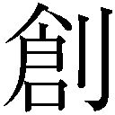
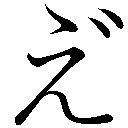

| にこは神様に○○（ナニ）される？ (ガガガ文庫) | |
| 荒川工 | |
| (2016) | |
小学館ｅＢｏｏｋｓ
にこは神さまに○○される？
荒川 工
イラスト ことみようじ

ⅰ．
夏の終わりに、蟬が声を限りに鳴いていた。
柿の木の肌にただ一匹がぽつんと。
季節に置き去りにされまいと必死に呼び止めるように。
しかし、木枝を揺らす風の冷たさは、確かに秋の気配を孕んでいる。
それでも蟬は鳴いていた。
（今のわたしは、たぶんあんなふうに滑稽なのだわ）
蟬がソロ時雨を奏でる庭の木を、開いた窓から眺めて栗下にこはそう思った。
〝にこ〟という名にもかかわらず、滅多に心から笑うことのない少女。
大っ嫌いな懐かしさとほんの少しの悲しさに満ちた離れの家、今はもう亡き父が使っていた小屋。そこで、掃除機片手に佇んでいる。
しかし掃除機のスイッチはオフのまま。
にこの『掃除を続けよう』という心のスイッチがなかなかオンにならないから。
眼鏡のブリッジを中指でくいっと上げて、気分を変えようとするけど上手くいかない。
「はあ......」
この離れの掃除は、にことその祖父の真行が持ち回りで定期的に行っている。
「なんでこんな日にわたしが掃除を......あいつはどこまで間が悪いのかしら......」
そう、今日はいかにもタイミングが悪かった。
なぜなら、本日は父の命日。しかも、初めての。
とはいえ、父の死を家族は確認したわけでも、ましてや葬儀を済ませたわけでもない。
にこたちだけに限らず、父本人と恐らくもう一人の誰か以外は彼の生死を知らない。
父、古原舞久は七年前、にこが七つの誕生日を迎える直前に失踪した。
夫婦仲も円満、というか周囲を『あらまあやだもうこのバカ夫婦♡！』と赤面せしめるホッテストなものだったし、それなりの由緒と氏子に支えられた安国神社の跡取り宮司として信頼も勝ち得ていた。
加えてにこ、その妹の沙梨という二人の娘に恵まれるわ、これで幸せでなければあらゆる辞書の『幸せ』の項に全改訂が必要だろうに。
嗚呼でもしかし。
『捜さないでください。きっと戻ってきます』
──と書かれた手紙と、なぜ？ と長い間にこが幾度も抱いて解けずにいた疑問だけを遺して彼は姿を消した。
そして捜索願が届けられ七年が経過した先頃、にこの祖父である古原真行が失踪宣告を受けるべく家庭裁判所に申し出たのだった。
「よォ。とうとうケリが付いたぜ」
真行はあっさりさっぱり、法的に舞久の『死亡』が認められたことを二人の孫に告げた。夏休みの宿題を終えたほどの感慨も見せず、どっかと腰を下ろす。
青陵学園立記念日──にこは中等部二年、沙梨は初等部六年だ──その楽しいはずの休日の昼時には、ちょっとばかりそぐわない話題。
案の定こぢんまりした和室の居間からわずかの間、音が消えた。
ちゃぶ台を囲んだ三人のうち、沈黙を最初に破ったのはにこだった。
「そうか......じいさまも大変だったこと。不肖の息子を持ったばかりに」
「............」
沙梨の方は口を閉じたまま、姉と祖父を順に見つめた。
物心ついてほんの短い間しか接しなかった父のこと、実感が涌かなくて当たり前......だといいのだけど、とにこは思った。
「なァに、俺にはおまえさんたち可愛いレディがいらぁな」
真行はにやりと、数多の艱難辛苦を乗り越えた強者にだけ許される、渋い笑みを浮かべた。沙梨の頭にぽんと乗せられた皺だらけの手は、体温以上の温もりを伝えているように見える。
（じいさまよ......）
にこの小さな胸（※本人は『まだ成長過程。成・長・過・程ッ』と日頃強く主張）の奥から、祖父の想いに応えて熱い気持ちがこみ上げた。
「......おじい、そういえばこの前また、どこかの若いお姉ちゃんと手をつないで歩いてましたね？」
「沙ー梨沙梨沙梨沙梨！ それはシーだぜ!? にこの前ではビー・サイレント!!」
こみ上げた熱い気持ちが、ポテンシャルはそのままに額の青筋へコンバート。
「......じいさま、『可愛いレディ』の中には、わたしたち孫の他、どんだけいかがわしい関係が含まれてるのか、怒らないから答えてくれる？」
「痛ェ!? すでに怒ってらァな!? キリキリ俺のケツをつねり上げるその指に怒りが込められてらァ！ 年寄りはもっと丁寧に扱えってんだ、コラァ!!」
「中二の孫に不純異性交遊を窘められる年寄りがどこにいる」
「まァ、俺くれェのもんだろな」
「......おじいは、きしょうかちの高い生き物なのですね」
「ザッツライトだぜ沙梨！ だから丁重な保護の必要が......って、いててててててててて!!」
さらに強く尻たぶをつねられた真行の悲鳴は、サイレンのように甲高い。
「沙梨、この珍しい生き物を小六の無垢な視線でビッと叱ってやるがいいわ」
「............」
一瞬、黙考。きっ、と真面目に。沙梨が一言。
「おじい、不特定多数といたすときはひにんだけはしっかりと、です」
「......叱るポイントずれてる。なんていうか、体の下方向に思い切り」
おじいの悪影響だわ......とにこは嘆息し、もう一度真行をつねる指に力を込めた。
「はあ......」
そして今、ここ、父の離れでもにこはため息を吐く。
便宜上もう『死んだ』人の部屋を掃除してなんになるというのだろう。
「......無為だわ、無為」
自問に手を振って自答する。
そうでなくとも、この離れは嫌いなのだ。いや、ここの主であった父が。
父の失踪理由は不明とされてはいるが、にこはある事実を知っている。
『ほら、舞久さん、最後に目撃されたときは若い女の人といたっていうじゃない？』
口さがない叔母が、母に話していたそれを当時十歳のにこは襖越しに聞いていた。
事件性が高いだろうに、警察が父を積極的に捜索してくれないのはなぜだろう。
語彙はそこまで達者じゃなかったにせよ、子供ながらに不思議に感じていたにこだが、そのときようやく合点がいった。
──お父さんはお母さんを捨てたんだ。
さらにその翌年にもともと身体の弱かった母が、心臓を悪くして鬼籍に入る。もちろん葬儀に父の姿は無かった。右に左に後ろに前に、それはもう、無かった。
にこの男性観はこのとき決定的なものとなる。
『男の人なんてっ!! ええい、男の人なんてっっっっ!!』
祖父の真行だけは別にせよ（しかしあの女性への無節操さは絶対父に遺伝してると山盛り信じて疑わない）、おおむね男性に対してはそうした態度を貫き通してきたにこだった。
「挙げ句こんな妙なもの集めるだけ集めて......」
父の離れは六畳ほどの小屋で、安国神社の社務所とにこたちの住居を隔てる小さな鎮守の森の中にある。
真行いわく『舞久の趣味の部屋』だそうだが、その収集物の数と統一感の無さといったら。
（有田焼、アラビアンランプ、仏像、キリスト像、試験管、薬草、蛇の抜け殻、カレー粉、あと......なんで大量の神学書や哲学書とかと一緒に同じくらいえちい本が並んでるのよ、それもロリ・熟・和・洋・二次、三次元とバラエティ豊かに）
小さい頃、ずっと子ども達に立ち入りを禁じていた理由が丸わかりだ。
「......お母さん、わたしいつもこの部屋に来ると、強く生きるという気持ちが大きく殺がれる気がするわ」
にこは天国にいるだろう母に語りかける。
（（ふぁ、ふぁいと、にこ！ そこはポジティブシンキング！ むしろ〝えすえむ〟ったり〝すかとろ〟ったり〝ねくろふぃりず〟んでなくて良かったなーって！ ね？））
母が空彼方から励ましてくれたような気がしたが、それポジティブというよりむしろ諦めでは？ と悩みは増す一方。
にこが覚えている父は非常に真面目で温厚で、家族団らんの場でテレビがキスシーンなど流そうものなら、
『オホンゲフン、ファ、ファ、ファッショ！ パッション!!』
と咳だかくしゃみだか思想だか情熱だかわからない誤魔化しで、顔を真っ赤にするほどウブだったのに。
しかしそもそもウブで真面目なら、よその女と駆け落ちなんてするはずもなく。
（でも......）
部屋を見回して、
「死んだ......のかぁ......」
自らに言い聞かせるために、そう口にした。
もうこの部屋の掃除はこれで最後にしよう。真行にそう伝えて父の私物を少しずつでいいから処分してもらおう。そして、いずれはこの離れ自体も取り壊してもらい、父についてのすべてを忘れよう。
（それに、ここは沙梨の教育にもよくないもの。ただでさえ『性教育？ なにそれえろい？ えろくない？』みたいなおじいがいるのだし）
やれやれ、とつぶやいて気乗りしない掃除を再開しようと目を上げる。
（え......？）
違和感。微かに何かが光った。
何度もここには出入りしているはずなのに、見覚えのない物。
壁に備え付けの棚、要するに例の難儀な本が並んでいるその上だ。
（おじいの忘れ物かな......）
近づいて、にこの背よりも少し高い棚の上に手を伸ばした。
小さく丸く冷たい感触。それをつまんで目の前に持ってくる。
「指輪？」
リングの内側には、にこの知らない文字がぐるりと彫られていた。
さらに、見る角度によっては青とも赤とも淡く輝く綺麗な石が嵌め込まれている。
石の形は植物の種を象ったよう。
造作の細かさ、傷一つ無い滑らかな石。素人目にそれはそこそこ高価そうなものに映った。
（きっとまたおじいが、若い恋人にプレゼントを買ってきたんだわ。オークションにでも出してやろうかしら）
そのアガリで気晴らしがてら、友人たちや沙梨と遊びに出かけるのも悪くない。
もっとも年頃の女の子らしい遊び、お洒落や異性とのお付き合いなどに自分は縁が無いから、いつも通り地味ーなこと（雑貨屋、公園、喫茶店がヘビーローテだ）になるだろうけど。
当然アクセサリーの一つもにこは持たない。ただ鬱陶しいだけだと思っている。
......たまに、うっかり興味を抱いてしまう自分も、それ以上に鬱陶しい。
ちらり。
（............）
つい見るともなしに指輪を見る。
（所詮、こんなのは男の気を惹いたり虚栄心を満たしたり、自信のよりどころを自分以外に求める弱い心につけ込むもの。別に気にもならないわ。気にもね）
つるり。
（............）
さて、心の声とは裏腹に、ずっぽり左薬指に指輪が収まっているのはなぜだろう。
（......ちょ、ちょっとした知的好奇心よ）
その割には、まんざらでもない表情で指輪に目をやっている。
（い、いわゆるその『敵を知り己を知れば百戦危うからず』って奴かしらね。気まぐれとも言うわ）
果たしてなにが敵やら己やら。
それよりにこが知るべきだったのは、そうした『気まぐれ』が時に『運命』と呼ばれる事実だったかもしれない。
「......？」
一番最初に気づいたのは、手にした指輪と同じく光。
でもその光量は比較にならない。
「え......!?」
天井が強く光り輝いている。明かりを灯したはずもないのに。
「ちょっと、なにこれ!? 先月電気代滞納したからって嫌がらせ!? 東京電力アンタでんこ今に見てなさいよ!!」
にこの混乱により、でんこ受難。
まったく照明や電力などとは関係ない光は、その間も弱まる気配がない。
にこが次に気づいたのは、頭上の誰かの存在。
あまりの眩さに目を強く閉じたというのに、はっきりと。
「そこな、でんこか────!!」
いや、でんこでない。にこはまだ混乱の淵。
圧倒的な力を感じさせながら、それは徐々に舞い降りてくる。
悪魔、幽霊、宇宙人（＋でんこ）どれも見たことはないがどれでもない気がした。
ただもっと遙かにとんでもないもの、なぜかそう感じてにこは怯えた。
「なによ、来るなら来なさいよ、こちとらオヤジもお母さんも亡くしてんのよ！」
言いながら、ああ今度は自分の番だ、と納得しかけている自分に驚く。
（......沙梨ごめん、おじいごめん、あ、でも沙梨が長じてグレたら化けて呪っておじいを超ＥＤにしてやるから!! じゃあ、あとよろしくさようなら......！）
抗ったところで無駄としか思えない力を感じて、覚悟を決めた......つもりだった。
（......どうせ、なんとなく生きてきただけだし）
生き足搔くのってわたしの美学にはないわ、と以前思ったこともあった。
（......だってさ）
意識がだんだん遠のいていく。
（だって、長生きするとお母さんに悪いような気がしたからさ......）
若くして亡くなった母。父に去られてさぞ辛かっただろうに、自分と違って笑顔を絶やさなかった母。拗ねて笑うことを忘れたわたしが代わりになれたら良かったのに。
（（えー、にこ、本当にそれでいいの？））
脳裏に浮かんだ母が、生前同様のえらく軽い口調で問う。
大好きな母だけども、これには少々カチンと来た。なによ、他人事みたいにぃ！
（そりゃ、本当はねえ......!!）
（（......本当は？））
（ほ、本当は......）
......本当は、やっぱり死ぬのは怖い。
まだ何も知らない。自分のこと。他人のこと。......父のこと。
誰かに恋されたこともない。誰かに恋したこともない。
いや、それともあったのかな。無かったのかな。
これまで自分が避けてきた様々ばかりが、浮かんでは消える。
「......やだ」
ぽつんと漏れた言葉が、叫びに変わった。
「やだやだやだぁ!! 助けてよ神さま────っ!!」
信心なんて深くもないのに、こんなときだけ神頼み。
（いかにもな日本人だなあ......そりゃ神が八百万もいたところでこれまで見かけないわけだわ......ああ、もうだめ......）
『呼んだか？』
「いや、別に本気じゃなかったし............って、お返事来たー!?」
諦め、へたりこんでいたにこの目が、ぱっちりと見開かれた。
声の主は、今し方まで恐怖していた相手だった。
強烈な輝きを放っていたそれは、直視できる程に光を弱めてゆーらゆらと中空に浮かんでいる。
「............」
しばし言葉がどこかに失せた。
おでこに人差し指を当て、ううむと一唸り。
「ええと......」
とにかく、この拍子抜け感をどう表現してよいものか考える。
「......あなた、どこ小？」
あれだけにこが恐れた相手は、それほど幼い姿だった。妹とさして差がない。
というか、突っ込む点は他盛りだくさんだけど、心の平安に希望的観測はとても大事だ。
「......？」
端正すぎる顔と美しすぎるブロンドのロングヘアが困ったように傾いて、ちょっと慌てる。
「あ、じゃ、じゃあ、どこ中......？」
「『どこ小』とやらも『どこ中』とやらも知らぬ」
いつの間にか、見た目小学生（中身ヤバげ）な存在はすぐ目の前に迫っていた。
「ここがどこかも知らぬ。我が知るのは、」
顔が近づけられる。
「......汝が我を呼んだということ」
「......っ」
見れば見るほど整った容姿だ。
日本人離れ（ていうか人間離れ）した肌の白さ、紺碧の瞳。口紅を引いたようには見えないのに、艶っぽい桃色をした唇。
そもそも長い髪からてっきり女の子かと思いきや、フェミニンな男の子と言われればそのようにも見える。
にこはこんな綺麗なかたちの顔を間近にしたことはなかった。
──い、いーえ、そんなことない！ うちのママだって大したもの、沙梨だって負けてない、わたしだってまだ伸びしろ残してる！ ......たぶん。
うっかり見とれた自分に腹が立ち、頭をぶんぶん振りまくる。
その甲斐あってか、ようやく尋常ならざる事態を脳がもぐもぐ咀嚼を始めた。
「ああああああなた、誰、どうしてここにいるの、わたしが呼んだってどういうこと!? あと、子どもが空を飛ぶもんじゃないっ!!」
「落ち着け、汝」
「い、今のは『飛行』と『非行』を掛けた高度な諧謔よ!!」
動揺を見抜かれた上、無茶振りを強引に回収。恥の上塗りズムが止まらない。
「我が何者で、なぜここにいるか、汝は既に知っている」
要するに知り合い？ そんでわたしが招いたということ？
「そ、そんな『ハンカチ敷いたら強姦不成立』みたいな言い分は通らないんだからね！」
眼鏡をずり上げ、不信感もむき出しに彼女（彼？）をじろりと睨むにこ。
不審者が纏う縫い目一つ無い真っ白なローブが、まだうっすら発光している。
胸のあたりには、唯一の柄......文字が読み取れた。
「......か......？」
『神』
そう大きく書いてある。
「............」
ぽかんと口が開いた。そして次には、
「......ぶふ───────っっ!!」
......思わず吹き出していた。
やけに卑近な『神』主張で、たちまち現実へ立ち戻る。
「『神』て！ ......か、『神』て！ 実は『ネ申』とかそういうオチじゃないでしょうね？」
ひとしきり笑ってから、諸々の怪現象についてはとにかく全て錯覚＆トリックだと信じることに決めた。堅い。にこの決意は炊飯器に三日放置したご飯よりも堅い。
「はー、もうタチの悪いイタズラだわ......近頃の子どもは手が込んでること。沙梨の友達かなんかなら、玄関に回りなさい」
「我は神で、汝の求めに応じて、現身に降りたものである」
「......いやあの、そういうのわたし、興味ないんで」
神社の娘としてはえらく不適切な返答。でも噓はつけない。
──うん、さっきはきっと、疲れていたのだ。
昨夜は沙梨の宿題手伝ったし、溜まった洗濯物を一気に片付けたし、遅くまで月末までの献立組み立ててたし、おじいは『にこー！ 一緒にバスターイム!!』って浴室のドア開けてくるし（熱湯ぶっかけた）、うん、やっぱり疲れてたんだな。
「......神、だもん」
さらにお子様は繰り返す。
「はいはい、カミカミ、カミングアウトだ、あー驚いた。びっくりだ」
「............」
ぶすっくれて、頰を膨らます『自称・神さま』。
（なんだ可愛いところもあ......）
「えい」
と『神さま』が指を軽く一振りした。
「......へ？」
ぼふん！
（うわー、モノが爆発するときって、こんな爆音とこんな爆風が起こるんだー、ハリウッドほど派手じゃないなー、予算少なめのＶシネみたーい）
なんていうのんきな思考で、現実逃避するしかないほど見事に、
「......神だもん」
離れの屋根はすっかり吹き飛んで、秋の日射しが爽やかに二人に降り注いだ。
ⅱ．
「......ふが!?」
クラウゼは勢いよく顔を上げた。
今まで突っ伏していたデスクには、よだれのあとがはっきりと。
「おはようございます、クラウゼ様」
少し離れたデスクから、男がため息をつきながら声を掛けた。
「......ブレグヴァドさん」
「おはよーございまーす、クラウゼ様ー」
塗ったばかりのマニキュアを乾かしながら、片手間に女がそれに続いた。
「......アンソニーさん」
それぞれの名を呼び、クラウゼはおもむろに襟元を正しはじめた。
雑居ビルの狭い一フロアに、いかにも閑職といった風情でたった三つの机が並ぶ。
スタッフは二十代とおぼしき男が一名、同じ年頃の女が一名、そして妙齢の女が一名。
それぞれ、地味目のビジネススーツに身を包んでいる。
「クラウゼ様、おそれながら、女性でしかも上司が、寝癖がつくほど勤務時間中に爆睡というのはいかがなものでしょう」
ブレグヴァドのやんわりとした言葉のビーンボールを喰らいながらも、クラウゼが顔を引き締めて言う。
「それについてはまたのちほど。お二人ともよく聞きなさい。たった今わたくしは啓示を受けました」
「啓示......それはまことですか、クラウゼ様」
「いよいよお仕事ですかあ？ やだなあ、忙しくなるなあ......」
真逆の反応なのが、上司の苦労を忍ばせる。
「まだはっきりとしたことはわかりません......しかし、一つ確実なことがあります」
クラウゼは上司として年長者としての威厳を顔に取り戻していた。
部下達の息を飲む音が、静かに響く。
「......わたくし昼寝なんてしてませんからね？」
「そっちかよ！ ていうか、それは認めましょうよ!!」
二人は同時に突っ込んだ
クラウゼの職務に対するプライドは非常に高いものの、ややズレていることも確かだった。
「このクラウゼ、神を捜して幾星霜......ちょっと疲れて居眠りぶっこくことがあってもいいじゃない......怒られるとマジ萎える......マジ泣ける......」
「クラウゼ様、可哀想......でも、頑張って！ あなたは中間管理職、あなたの手柄が部下への査定。要するにわたしのために......」
目を潤ませながら、手前勝手な応援をぶん投げて放るアンソニー。
「泣きべそかくのはその辺で、クラウゼ様。啓示があったのならば我々が成すことは一つです。それがいかな微かなものでも」
「......そうですね。ブレグヴァドさん」
すっくと立ち上がって、泣き虫上司は傍らにあった杖をかざす。
途端、三名の衣服はスーツから体に密着したローブ状のものへと変化した。
「ゆきましょう。この偽界で、神が降り立つその場所に」
しばしお待ちを、神さま......今、クラウゼが参ります......。
心でそう約束したクラウゼを先頭に、三人の姿が一瞬のうちにかき消える。
ⅲ．
──まず、落ち着こう。そう、落ち着こう。
えーと、決して楽ではない家計から、この離れの屋根の修繕費を捻出する方法は......いや、どうせ取り壊してもらおうと思ってたからいいのか？ でもなんだか納得いかないのはなぜだろう、とりあえずあれかな、怒っていいよね？ よし、ここまでわたし頑張った!!
「いったいなにしてくれるか、このお子様ー!!」
結局、超常的な部分は一切無視、経済的・感情的側面からの主張に徹したにこだった。
「神さまだもん」
「ええい百歩譲って神さまだとして、こんな暴挙が許されると思うてか!!」
神に意見する女子中学生、栗下にこ。しゃべり場でも見かけない、ずいぶん尖った真剣十代である。
「ようやく、認めた」
『神さま』が微笑を浮かべた。幼いその妖しさに、また、惹きこまれそうになる。
「......べ、別に神さまと認めたわけじゃ......」
「よい。その言葉で我は今、真の生誕を果たした......」
「......？」
意味深長な言い回しだった。
（や、やだ......なに、運命の出会いとかそういう類いのアレ......？）
そうなるとこれまでの不可思議全て、ポジティブに捉えることも出来るかも......。
「......ような気がしないでもない」
「うぉい!!」
絶対からかわれてる、そうに違いない。心に生まれかけた乙女回路を即刻、破棄する。
「あんた何者？ なんでここに？ いったいナニするつもりなの？」
「我は神さまで、汝が呼んだがために現れ、そしてナニするつもりと問うならば、」
「ひゃっ!?」
つるぺたり。実りの少ないにこの胸に、神さまが飛び込んでいた。
「こうするつもりである」
「......い、一応聞くけど、これは一体なんの真似？」
「我の本能が『契れー』と」
「......そんな『チェキラー』みたいに簡単言うな。ていうかスケールでっかい力持ってて、ただの痴漢か、このガキぃ！」
とするとやっぱり男の子......いや、でも押しつけられた胸はなんだか柔らかく......ゆ、百合？ わたしたち端から見たら今、百合ＳＨＥズ？ なんだかジェイムス・ジョイスっぽい？（※ぽくない）
倫理的に追い詰められたにこにそのとき、どこからか声が届いた。
「神に向かって痴漢とはなんですか！ この、世界ビッチ選手権三連覇!!」
「ビッチで世界一で三連覇って、根も葉もなにも無さ過ぎじゃないの、ねえ!?」
空から妙な格好のおばさ（※クラウゼ検閲）もとい、女盛り的年齢の女性が舞い降りてきた。
──なにさなによ、なにが起ころうと今更驚くもんですかっ。
半ば意地で、にこはおば（※クラウゼ検閲）もとい、脂の乗った年頃の女性──クラウゼをきっ、と見据えた。
「それほどあなたの態度が不遜だということですびっち」
「......語尾みたいにして、続けざまにさりげなく人をビッチ呼ばわりか」
「ああ、クラウゼ様の罵倒は、いつ聞いても胸がすきますよう」
「......いや、どちらかというと胸が痛いかな、俺は」
クラウゼ同様、珍妙ファンタスティックな装いの男女が、離れと呼ぶにはちと風通しがよくなりすぎた一室に次々着地した。
「ていうか、誰なんだあんたらは......」
神さま同様、空からふわりと現れたクラウゼ、アンソニー、ブレグヴァド。
不審者は一日一人で十分なのに、なんで足すことの三？ にこはトホホと涙に暮れた。
「ようやく見つけました、神さま......クラウゼは......クラウゼは超嬉しゅうございます......」
「......仔細はもー問わない。知り合いなら、いち早く持って帰ってくれませんか、コレ」
首根っこにぶら下がって離れない神さまを、にこは指さした。
同じような変な服で、このお子様を奇特にも『神さま』と呼ぶアレたちなら、まあきっと上手くやってくれることだろう。ああ『思考停止』って素敵。四文字熟語としては『全品半額』の次くらいに好き。
「この人間たらそれほどの寵愛を受けておいて、なんて口の利き方を......神さま神さま、とーととと、どうぞこちらへいらっしゃいませ」
「......？」
「わたくしですよ、クラウゼですよ」
「クラウゼ......？」
「ああ......神さま......」
「なんて感動の再会......クラウゼ様良かったですねえ、これまでの苦労が報われて......」
「うむ。さぞ感無量だろう」
「これできっとあたしのお給料も鰻登り......」
「......君はほんと、そればっかだな」
部下二人の俗っぽいやりとりをよそに、クラウゼは神さまの元へ駆けだした。
「神さまー！」
「クラウゼー！」
応えて、神さまもようやくにこから離れゆく。
事情は知るよしもないが、きっと長いこと離ればなれだったのだろう。
さんざ迷惑を掛けられ、もはや関わり合いになることもあるまいが（しかし離れの修繕費はしっかり請求する予定）、にこは少しだけ微笑ましい気持ちになった。
「神さまあああ～！」
「クラウゼ～！」
スローモーションのような今このときを堪能しながら、クラウゼは胸に神をかき抱く甘美の瞬間に向けて走る。
「かーみーさーまー！」
「クーラーウーゼー！」
そしてようやく二人の距離はゼロへと......
「......で、汝いったい誰？」
「かかかかみさま────!?」
ずさ──────っっ。
（うわああ......）
夏は終わったというのに、高校球児並みのガッツ溢れるヘッドスライディングで、クラウゼは床をこすった。一瞬、さしものにこも同情するほど。
「......『いい話だなー』って思ったわたしの純情が馬鹿を見た」
うん。理解した。
ほんの、ほんっっのわずかな神さまとの付き合いでわかったのは、とにかく『常軌を逸してる』ということ。易々といい話で終わらせるようなタマじゃないのだ。
「クラウゼ様、大丈夫ですかぁ？ えっと、お体もさることながら、神さまとの信頼関係とかその辺」
「我々は神と相見えるのは初めてゆえ、クラウゼ様の判断を仰ぐしかないのですが、あ、ダメだ、泣いてる」
「えっぐ、えっぐ、えっぐ......」
「ビッチビッチと鳴り物入りで現れて、まさかこの子とは無関係の変な人たちですぅってオチだったら、わたしは今からあなたたちを殴る。山下真司か照英みたいな愛を込めて」
にこはさながらスクールがウォーズしかねない勢いだ。
「違いますものー！ わたくしは神さまをこーんな小さな頃から、お育てあそばしてたのに......えっぐえっぐえっぐ......」
「そうか。ご苦労。しかしとんと記憶がない」
クラウゼの意はこれっぱかりも汲まずに、神さまは小首を傾げた。
「うえーん!! おーいおいおいおい!! ひどいいぃ!!」
「なんか、捨てられた女と弄んだ鬼畜男の様相を呈して......ブレさん、これはいい修羅場ですよぅ、ああんうっとりティスティ」
「アンソニー、俺には君のような修羅場ソムリエ趣味は無いのでわからん」
「ねえ、ちょっとそこの比較的常識人そうな変な人」
「......もう少し呼び方を整理してもらえると嬉しいのだがな、人間」
「じゃあ、ちょっとそこの変な人」
「そう整理するか......今は見ての通りの状態だ。後にしろ」
「あのねえ、こっちは見ての通り被害甚大なんですけど！ そんであの子が神さまだろうが、あんたらが保護者ならとっとと弁償して帰っていただきたいんですけど！ あ、被害者ことわたし、栗下にこにはＰＴＳＤのおそれもありますので、住所と電話番号を控えさせてもらってもいいかしら!? 具体的には別途慰謝料もください、夜露死苦!!」
「......なんとも勇ましいちびの娘だ」
「背や胸の小ささに反比例して、態度はでっかいですぅ」
「神さまがわたくしのことを忘れただなんて、きっとこのはしたなく胸の小さい人間に籠絡されての噓に違いありませんわ......さあ、神さまになにをしたかおっしゃいこの残念おっぱい！」
「あんたらみたいな恥ずかしい格好した連中に、そんなこと言われたくないわよっ!!」
「にこと言ったか、そこな娘は我になにもしておらぬ」
「ほら見なさい！」
「でもでも神さまぁ～、えっぐえっぐ......」
「我はにこに呼ばれ、ここに在る。そして、それ以前の記憶は無いのだ」
「呼ばれた、と申しますとまさか......」
クラウゼがにこに向き直り、じろりと睨む。
「ああー！ その指輪ー！ なぜおまえがごとき残念おっぱい、略してザンパイが!?」
「な、なによなによなによ!? いるなら返すわよこんな物......」
羞恥の混じった声音で勢いをつけ、指輪を引っ張る。
よいせ。あれ？ よい、せっ......あれえ!?
にこが、いかに力を込めようと、なぜか指輪はびくともしなかった。
「ああ、なんてこと......」
へなへなとクラウゼは床にへたりこんだ。
「どうしたんですかぁ、クラウゼ様？ これそんな大変なことぉ？」
「......今更始まったことじゃないが、自分の職務についてまったく学習してないな、君」
「ええい、いったいなんなのよ─────っ!?」
仔細は問わないつもりのはずが、とうとう天を仰いでにこは叫んだ。
ⅳ．
「よく聞きなさい、スタイルのいまいちな人間」
「聞かせなさいよ、トウの立ちすぎたお姉さん」
「......ぬうっ」
「ふんっ......」
よっぽどそりが合わないのか、にことクラウゼは面つきあわせて睨み合う。
「行き詰まる攻防だわぁ」
「本題に入る前に違う問題を増やさないでください、クラウゼ様」
わくわく見入るアンソニーを制して、ブレグヴァドが言う。
どうやら面白がり女のアンソニーとやらのお守りは、彼が一手に引き受けてるらしい。にこはなんとなく、自分と真行の関係を思い浮かべた。
「我を巡ってこのような争いが......美しいとは罪であるな......」
「巡ってないっ、少なくともわたしはっ」
「神さま今しばらくお待ちくださいませね？ ......さて人間」
「......なによ」
「我々は、真界よりこの偽界に降りた者」
「『ま』......なに？」
「物わかりの悪い人間ですわね。つまりは異世界よりの使者だということです」
「ああ、そうなんだ。よかったー」
「......なにゆえ？」
「だって『異世界のルールに則った変な人たち』と『単にコスプレした変な人たち』だと後者のほうが圧倒的にイヤすぎるもの」
「この伝統的衣装の良さがわからないとは、まったくこの偽界人ときたら......」
「多感な中学生にこんなハードル高い異文化コミュニケーションぶつけて、多くを期待しないでよ」
「......まあ、いいでしょう。ともかく、我々の『真界』とあなた方の『偽界』は密接な関係にある。種のように、真界をくるみ、真理の膨張を阻んでいるのがこの偽界です」
「真理の膨張......？」
抽象的な物言いが、にこの理解の限度を軽々と超えた。
「真界はすでに成熟し、偽界という殻を破るときが来た。我々神官に神はそう告げたのです」
「神って......この子が？」
「神さまだもん」
今や『自称』ではない神さまが答えた。
「正確には神さまが現身を持つ前、まだ神が神の国におられたとき。神はご自身の真界での誕生を預言され、その通りに神殿にてお生まれになったのですよ」
芝居がかった所作で、クラウゼは両手を胸に当てる。
「そしてこのクラウゼを乳母代わりに、それはそれはもう可愛い盛りを過ごし......夜泣きする神さま......ハイハイする神さま......離乳食を口元につけた神さま......おんぶだっこと甘える神さま......ふぅ、ちょっと胸が張ってきたから神さまにおっぱいあげてもいい？」
「気持ちはわかるが、どうかお願い、あとにして」
「ちぇっ......では話を続けます。そんな愛らしい神さまは、こちらの暦でいうところの１９９９年７月、ついに偽界へと降臨！」
「へえ、１９９９年７月に......ん？」
「神さまの凛々しく勇ましいその志に、真界の親・神さま派こと我々アングルムア教団は奮い立ったのであります」
「アングル......って、ちょっと、ねえ」
「ああ、しかしこの偽界に降りたってすぐ、神さまは迷子になられ──神隠しならぬ神隠されですわ──捜索願いを出すもむなしく......こっちの警察ってほんとアテにならないこと」
「ねえねえ、ちょっとってば」
「......なんですか、いいところで茶々など入れて」
「あの......」
躊躇いがちに、にこが口を開いた。
「コレ、もしかして神さまじゃなく『恐怖の大王』じゃないの？」
「失礼な、神さまですわ」
「神さまですよねぇ」
「神さまだな」
なんの迷いも疑いもなく、真界とやらからの使者三名は答える。
頭を抱えてにこはうずくまってしまった。
『１９９９、７の月、恐怖の大王がアングルモアを目覚めさせる』って預言が、ずいぶん前だけどこっちじゃ知らない人がいないくらい浸透してたのよ、ノストラ某と五島某とかいう人たちのおかげでねっ！
......そう力説したところで、きっと自分が脱力するだけの結果に終わりそうなので、あうー、と涙目になるに留めた。
「にこ、戦わないと、現実と」
とどめとばかりに、がっくり肩を落とすにこの頭をなでなでする神さま。
「......コトの重要さを、当事者が全くわかってないというこの現実」
──ああ、お母さん、あなたの娘はえらいものに関わりあったみたいです......で、でも、１９９９年なんてとっくに過ぎてるし大丈夫だよね、ね？
（（......にっこり））
──笑顔で誤魔化されると怖いから、なんとか言ってお母さーん!!
しかし心に浮かんだ母は、ただただ晴れやかな笑顔を返すだけだった。
『マザーは現実をマザーマザーと見せてくれた』......とか言うてる場合じゃないのよ！
「さて、長きに渡って行方知れずだった神さまをこうして見つけることが出来たのは僥倖と言うほかありません。『偽界においての神さま捜索』という教団内最重要任務に就いていた甲斐がありました......」
「本当は左遷だったってことは黙っておきますね、クラウゼ様っ」
ばしん。軽快な音とともに、クラウゼがアンソニーの頭を張っていた。
「......ひどいですよぉ、クラウゼ様」
「艱難辛苦を進んで買って出る君の行為が、だんだん崇高なものに見えてきた俺の目はきっと疲れているんだろうな」
ブレグヴァドのため息に、さもありなん、とにこは知らず頷いていた。
「さて、ようやくそんな神さまを見つけたにもかかわらず、記憶を！ 記憶を失っているですってえー!?」
「我は、なーんも覚えておらぬ......そう、良きこと悪しきこと、喜びや悲しみも......」
「......そう、なの......？」
不意に同情が沸きそうになるが、すかさず胸に頰をすり寄せてくる神さまをおしのけるのに、それどころではなかった。
「良きも悪しきも喜びも、十分覚えてそうですけどねこの様子見てると......ええい、離れなさいってばちょっとお！」
かつて友人にブラいらずと称えられた胸を、ゆーっくり優しーくすりすりされると、柔らかさに欠ける分、ダイレクトに胸の先端が刺激され、とてももにょもにょとした気持ちになる。
「はぁ、そんなスキー初心者でも転びそうもないなだらかな胸よりも、わたくしクラウゼのこの遥かなる頂に抱きつけばよろしいのに......」
「ち、小さな胸に大きなお世話だ！」
「『世界の蕾』で偽界の人間が神を召還したことが影響したのかもしれませんな」
「『蕾』......もしヤらしいこと言い始めたんなら、地を這う生き物の意地を今ココで見せてあげるわよ？」
相手が空を飛べるからってわたしは容赦しないわ。はーっとげんこつに息を吐いて暖めるにこの目は、真剣そのものだ。
「勘違いするな、微妙な単語に即反応するクレイジー思春期め。俺は、おまえが身につけたその指輪のことを言っている」
「......これ？」
手を掲げて指輪を見せる。
相変わらずすっぽりと薬指に収まったままだ。さっきから何度も外そうと試したが、結局徒労に終わった。
「それは本来ならば、神さまが自らの伴侶に渡すべきもの......」
恐ろしく難儀なことを、クラウゼが恨みがましい目つきで告げた。
「え......ええええええ!?」
「そう。そして伴侶と契ることによって、この偽界を滅ぼし真界を救うお力をこのお方は得るはずなのです」
「契る......って......」
「英語で言うと『契りんぐ』」
「英語で言われてもわたし契りませんからね!? っていうか英語じゃないし！ だいたい、この世界を滅ぼすとか公言してる相手に協力すると思うほうがちょっと頭アレなんじゃないの!?」
「わたくしだって、あなたが神さまのお相手に相応しいなんてほんのわずかなこれっぽっちも思っちゃいません」
「そ、そうはっきり言われたら言われたでなんかむかつくわね！」
なんとも複雑な乙女心。
あらあら自分にもそんなものがあったのだわ、と心のどこかで冷静に思う。
「だいたい、伴侶とかなんとか言ったって、この子、女の子なんじゃないの？ わたしそういうシュミありませんからっ」
先ほどからずっと覚えていた違和感をにこはぶつけた。
「？」
神さまは顔を斜めに傾けて、にこを不思議そうに見ている。
その仕草がやけに愛らしくて、疑問を抱く自分の方が間違っているのでは、と一瞬確信が揺らぐほどだ。
「そこが問題なのだな」
「そこが問題なんですよねぇ」
二人の部下の言葉を受けて、ふう、と大げさにクラウゼはため息を吐いて見せた。
「......本来、神さまに性別はありません。『世界の蕾』を授ける相手が女ならば男に、男ならば女にその姿を変えるもの」
「......なにそのフレキシブル雌雄同体っぷり。ミミズ、カタツムリ、アメフラシ？」
「神さまですがなにか？」
クラウゼは、息をするような当たり前さで答えた。
「ぐっ......」
そう言われては押し黙るほかない。無敵コマンドに等しかった。
「しかるに、こっそり今、神さまの身体をまさぐってみましたが、なぜかなぜか女の子!!」
そう言いながら、なおも神さまの胸や下腹部を、真顔でむにむにむにむにしている。
「こら、まさぐるなまさぐるな、仮にもあんたが『神さま』と呼んでる相手を」
「状況から察すると、神さまが授けるべき『世界の蕾』をその意志とは無関係にあなたが身につけることによって、今までなんらかの形で封印されていた神さまが目覚めた、それがこの不可思議を生んだのでしょう。あうう、クラウゼ、悲しい......男の子だったらもっと楽しみが増えたのに......」
──なんつーか、この人、神さまで遊ぼうとしてないだろうか。
「そもそも、いったいどうして神が封印されていたのか、覚醒前とは言え畏怖すべき力を持つ神に対して誰がそんなことを試し得たのか......謎は尽きませんな」
「神さま、なにか覚えていないんですかぁ？」
ふわああ、と大あくびを一つ。もちろんそんな太平楽に振る舞うのは外ならぬ神さまだ。
「......ぐっすりよく寝てたことしか覚えておらぬ」
恐怖の大王、１９９９年に寝過ごすの巻。『ムー』あたりにタレこんだら謝礼もらえるかしら、いやのんきすぎてハナから相手にされないな。にこの頭の中で打算がパチパチ弾かれ消えた。
「ああ、可愛いステキ無邪気！ でも今はそれが憎い!! ええいこの怒りのやりどころをとりあえずは目の前の人間に......」
どこから取り出したのか立派な革の鞭や蠟燭を手に、じりりと迫るクラウゼ。堂に入ったその姿は、明らかにプライベートでもそういうプレイをお好みですよね？ といった様子だ。
「ちょっと待ちなさいよ、それ『逆恨み』って言うんですからねこっちの世界じゃ！」
「大丈夫、わたくしたちの世界でもそう言いますから、安心なさい」
「できるかあ!!」
「......にこをいじめてはならぬ」
すっくとにこの前に、神さまが立ちはだかった。
「あ......」
きゅん。
ウワサにだけ聞いたことのある、胸の高まりの音がした。
父が失踪して少し経った頃に、隣に越してきたずっと年上のお兄さん。
幼いにこは、彼にほんの少し父を重ねてかすかな思慕を抱いていたことがある。
そんな気持ちも、母が亡くなることで自ら捨て去った。
しかし、無くしたはずのそれが、ほんのりとだけ蘇った気がする。
にこの頰が、熱くなった。
「ああ......きっとインプリンティングで愚にも付かない人間に、感情移入してしまっているのですね......あの血も涙もない神さまがすっかり変わられて......おいたわしや......」
「にこをいじめてよいのは我だけである」
びしっとクラウゼよろしくどこかから鞭を取り出した神さまが毅然と言い放つ。
こ、こんの胸きゅん泥棒！ と、にこはときめきの無駄遣いを大いに恥じた。
「あ、その辺はお変わりないのですね、よかった」
「......ちっともよくない！ 結局なにもかもが間違いだってんなら、もう屋根が吹っ飛んだことは不問に付すから、さっさとこの指輪を持ってって、どこかよそで伴侶探すなりなんなりしなさい！」
世界がどうだ、神がどうだといったややこしいことに巻き込まれるのは沢山だ、今夜のご飯の買い物だって済んでないのに！
きゅっ。
服のすそを、か細い手が摑んだ。
曇りのない目が、にこを見上げている。
神さまが、何も言わずににこを見つめている。
「......どうしてそんな目で見るのよぉ」
まるで妹に頼られてるようで、ともすれば、身も世もなく『面倒見るわよ！』と安請け合いしてしまいそうな自分が怖い。
（ちなみに、『世界の蕾』は神さまへの隷属の証。神さまがマジでなにかを望まれれば、それを持つ人間は逆らうことが出来ませんので、悪しからず）
「うぉい！ それ悪しからずじゃなくて、悪し！ 紛れもなく悪しだから！」
小声で耳に囁くクラウゼを大声で咎めた。
「？」
幸い神さまにはクラウゼの爆弾発言は聞こえなかったのか、きょとんとしている。
──すんなり神さまの言うことを聞きそうになったのも、この指輪の影響......!?
あ、危ねー!!
「良かったですわねえ、神さまが記憶を失ってらして......しっかし、こんな事態は教団の預言書にはありませんでしたわ......いずれにせよ、神さまが刷り込みであなたのことを伴侶だと思っているのであれば、『蕾』はあなたを離さないでしょう」
「てことは、つまり......？」
「不本意ですが契っていただくしかありません」
「無理無理無理無理、女の子同士でそれは無理！」
「にこは、我と契るのがいやなのか？」
「あんた、ちゃんと意味分かって言ってる!?」
「●●●を●●●に●●して最終的には●●するのであろう？」
「......わあ、下手するとわたしより分かってるう」
年下の子にこう真っ向から保健体育用語を連発されると、もう赤面するのみだ。
しかしそうした知識はあれども、未だわたしの身が無事なのは、まだ神さまがまっさらな状態で欲望が希薄なためだろう。
......じゃあ、この先もし神さまが妙な考えに毒されたら......!?
「あ、あのね、女の子同士だとそういうのは無理なの、わかる？ ていうか世界滅ぼす汚名背負いたくないし、わたし」
いくら、ややこしく好きになりきれないこの世界とはいえ、自ら滅亡に導くのはかなり夢見が悪そうに思える（世界が滅べば夢見もなにもあったもんじゃないが）。しかしなにはともあれ我が身！ 我が貞操よ無事であれ！
「我は偽界が滅ぼうとどうなろうと知らぬ」
がーん！ てことはわたしの貞操もですか!?
「その通りですわ、記憶を喪ってもさすが神さま！ この醜い科学文明に支配された偽界をぶっ滅ぼしましょう!!」
「しかし、同じほどに真界とやらにも興味が無い」
「えええっ、神さまああ!?」
......ほっ。少なくとも今は等しくナニにも興味がないようだ。
「我には記憶がない。あるのは誰かと契らねばならぬという思いのみ」
「うう......こうなると、是が非でも、このにことやらと契っていただかねば......」
「......だから女の子同士じゃ無理だっつーの。たとえわたしが男でも断るけど」
「クラウゼ様、では、このようにしてはいかがでしょう」
これまで寡黙でいたブレグヴァドが、初めて積極的に意見を述べた。
「クラウゼ様が仰しゃったように、神は刷り込みでこの人間を伴侶と思いこんでいる。そのため伴侶の証たる『世界の蕾』は離れることが無い」
「......うん、確かにどうやっても抜けない」
「では、神がより己に相応しい伴侶と認める相手を見つけ出せば良い。さすれば『蕾』はその相手のものとなるでしょう」
「要するに神さまが男漁りをするってことぉ？」
「......アンソニー、君は俺の言葉のオブラートを易々と破ってくれるな」
「なるほど......それは一理ありますわね、ブレグヴァドさん。『なぜこうなってしまったか』はおいおい調査するとして『こうなった以上どうするか』を重視しましょう。偽界滅亡、真界繁栄のために！ 神さま弥栄!!」
「そうなると、拠点が必要になりますよぉ。侵略拠点みたいなー」
「ええ、しかしあの雑居ビルじゃあ、神さまに相応しくはありません」
「屋根を吹っ飛ばすことが出来たなら、きっと直すことだって可能ですよぉ。ねぇ、神さま」
空を仰いで、アンソニーが神さまに問う。
「たやすいことである」
「ここはどうやら偽界の神殿らしき敷地内......それに神さまが眠られていたおかげで神気に恵まれておりますわ。きっと記憶を取り戻すきっかけになるはず」
「あのう、もしもし？」
にこをよそに、話が妙な方向に進もうとしていた。
「こんなせせっこましいところ、かつて『ゴージャス★クラウゼ』と呼ばれ、言いよる男を『わたくし、贅沢ですわよ？』とばっさばっさと斬り伏せていたわたくしには全く不似合いですけれど......では神さま、まずこの建物の修繕をお願い致します」
「......えい」
先ほどと同じように、神さまが指先を振るう。
目を瞠る間もなく、離れの屋根は何事もなかった様子でそこに既にあった。
「......もうなんでもアリか、あんたは」
「では、貧弱極まりない部屋ではありますが、今よりここを『アングルモア教団偽界支部』として活用すると致しましょう」
非現実の連続に、うっかりにこは、クラウゼの一言を聞き流しそうになった。
「へえ、ここにねえ......って待て待て待て待て待て待て待て──────!!」
「あなたは、曲がりなりにも『蕾』を持つ者。そうですね、神さまのメイド役を任ぜましょう」
「わー光栄！ とでも言うと思ったか、この年増」
「誰が婚期を逃した悲しいオールドミスですか！」
「いや、そこまで言ってない。ていうか、人んちに勝手に居着こうとしないでよね！ 挙げ句にわたしをメイド扱いとは、人権無視にもほどがあるんじゃない!?」
「だって、神さまだもん」
神さまと三人が口を揃えて言った。
「......ちっくしょう、まるきり言葉が通じにゃい」
孤立無援の中、にこの嘆きはひときわ虚しい。
「おーい、なに騒いでんだい、にこ」
真行のドア越しの声。
「あ......」
返答に窮していると、離れのドアが躊躇なく開いた。
祖父にいったいこの状況をどう説明すれば良いのか。
眼前の、変な子供と変な大人。
そして、大変なことに巻き込まれてるわたし。
......だめだ、どんな表現を用いようと、普通は頭がパーになったと思われる。パーだけに、１００パーそう思われる。でもきっとおじいなら、おじいなら、なんとかしてくれる......！
「なんでぃ、随分ビューティフルな客人が揃ってるじゃねェかい」
......しかし、真行は鼻の下をロングにするばかりだった。
「あんた、コレ見て感想それだけかー!?」
悩んだ自分はなんだったんだ、と思わず異界の住人たちを振り返る。
「え......!?」
「まあ、これは、にこさんのおじいさまですかしら？」
そこには、ついさっきまでの珍奇な扮装の不審者たちはおらず、外国人家族のような佇まいの四人がいるばかりだった。
ⅴ．
「やけにお隣が騒がしいようだねえ」
安国神社の隣家、城家の当主・優は縁側で陽光を浴びながら、のんびりと口にした。
和装で、笑みを絶やさぬ顔、それに丸眼鏡が輪を掛けて、昼行灯の雰囲気を醸し出している。
「そうでございますな、坊ちゃま」
城家に先代より使える執事、灰野敬一が応えた。
髭で白髪の偉丈夫たる彼は、優には他の誰に対してよりも穏やかに接する。
「いやはや、これだけ騒がしいのは久しぶりだねえ」
「......七年ぶりくらいかもしれませんな、坊ちゃま」
「にこさんが苦労するようなことが、起こってなければいいけどねえ」
「なかなかそうもいかぬかもしれません。あのお嬢様は、苦労が服を着て歩いているようなものでございますから」
「おやおや。苦労もあんな可愛い姿なら、背負い甲斐がありそうだ」
「......坊ちゃま」
灰野が咳払いをする。
「必要以上のことに関わり合うことはなりませんぞ？ 失礼ながら、苦労性という点では、坊ちゃまも人後に落ちませんゆえ」
えらい言われよう。
しかし、一代で名家たる城の身代を潰しそうな手前、返す言葉はゼロ以下だ。
「それを言われると、笑うしかないねえ」
はっはっは、と大笑する姿からは、深刻さがみじんも感じられない。
「......草葉の陰でお父上も同じように笑ってらっしゃる様が目に浮かぶようでございます」
「ま、親譲りのこの性格じゃあ、しょうがないよねえ」
はああ、とため息をつくのはいつも灰野の役目だった。
ⅵ．
古原真行
栗下にこ
古原沙梨
神社に併設された住居の玄関表札には、そう記されていた。
クラウゼは神さまたちを伴いその玄関先で、噓で糊塗した簡単な身元を真行に伝えたところだ。
やや地味ながらも、清潔感溢れるスーツ姿のクラウゼはにこの目には新鮮に映った。
他二人の格好も同系統。神さまは、真っ白なワンピースで、避暑地を訪れた深窓の令嬢を思わせた。
「それでわたくしの娘がにこさんとお友達で......あら、そう言えばいきなり家族総出でお邪魔して申し訳ありません」
クラウゼは神さまの頭を撫でながら言った。
「にこ、いつのまにこんなフォーリナーな友達が出来たんでい、しかも一人除いて俺のストライクゾーンにずっぽり入ってんじゃねえか、ヤッフウ!!」
「ああ、そうね......男はおじいもカウントしないよね......」
どっと疲れたにこが、真行を返し見る。
さすがに真界人という身元は公にするつもりはないのか、すっかり真っ当な外国人家族を装うことにクラウゼたちは決めたようだ。期はまだ熟さず、ということだろう。
「いや待てよ、その兄さんも女装してくれたならなんとかストライク......」
「おじい、あんたの何ヘクタールもあるストライクゾーンは、今ちょっと置いとけ」
さしものブレグヴァドも、恐れをなしてアンソニーの影に隠れていた。
「あたしたちぃ、つい先日この街に引っ越してきたんですけどぉ、仲介業者の手違いでぇ、契約したはずのマンションの部屋に既に人が住んでてぇ」
「そうしたら、にこさんが、こちらの離れを使ってはどうか、と勧めてくださって。ねえ？」
──神さまの思い通りになるその『世界の蕾』が指にある以上、ここは演技しといたほうが身のためですわよ？
クラウゼの目は、ずんずんがんがん雄弁に思いを伝えてきた。
（こっ、この女狐......っ!!）
歯ぎしりするも、下手に神さまに操られたら、ノー貞操・ノーライフ。
ここは我慢のしどころだと観念する。
「そ、そういうわけなんだけど、ええとこの人たち──」
「あら、ご紹介が遅れまして。これは夫のブレグヴァド、妹のアンソニー、そして娘の神さ......あいん、ですわ」
神さまと呼ぶわけにもいかず、クラウゼはさらりと偽名を伝えた。
（やけに年の差夫婦の設定にしましたね、クラウゼさグフッ......）
真行には見えない角度から、クラウゼの肘が、囁くブレグヴァドの脇腹を抉った。
「おじい......クラウゼさん一家にしばらく離れを貸してもいいかな......？」
「おう、困ってる人を無碍にするわけにゃいかねぇな！ 若くて綺麗な姐さんが三人もいるからってのは全くといっていいほど関係ねーぜ？」
「そこにしか意味を見出だしてないと思う。絶対」
......期待はしてなかったが、なんていう安直な受け容れぶり。
「お姉ちゃん、おじい。どうした、ですか？」
常にない賑やかさを不思議に思ったのか、妹までもが玄関先にひょっこり顔を出した。
（我が家の良心、サリーさま......！ この破天荒な連中になんとか言ったって、言ったって！）
「......どちらさま、ですか？」
見知らぬ四人を前にして、沙梨は不思議そうな顔をした。
「おお、沙梨、実ァな......」
しかし、すぐにピンと来たようで、
「......はっ」
（そう、沙梨、言ってやんなさい!!）
「おじいがいつもお世話になってます。あたらしいあいじんの方々、ですね？」
ぺこりこ。礼儀正しくお辞儀する。
（......嗚呼、沙梨の賢さが裏目ったようでス）
「そうじゃねぇんだぜ、沙梨？ あいじん予定の方々だ」
「そうでしたか。失礼しました」
ぺこりこ。お辞儀をもう一度。
「......おじい、マジあとから説教タイムだから。今日のわたしハンパないから」
「すみません冗談でしたすみません」
「ほほほ、愉快なお爺さまですわね。沙梨さん、わたくしどもクラウゼ家がこちらの離れをしばらくお借りすることになったのですわ。よろしくお願い致しますわね？」
「そうなのですか。こちらこそよろしく、です」
「よろしくお願いしますぅ」
ちゅっ。
派手な音を立てて、キスを真行と沙梨に投げかけるアンソニー。
「よろしく頼む」
対照的に、実直に頭を下げるブレグヴァド。
「よろしく、あの、お願いします、です」
（......あれれ）
沙梨がちょっぴり恥ずかしそうに俯くと、真行の後ろに隠れてしまった。
無理もないか。
父親と過ごした時間も短く、それ以来若い男の人がウチの中にいることなんてなかったわけだから、警戒して当たり前。
──ていうか、わたしだってそう変わりが無いんだった。
世界の滅亡よりも、指輪の不思議な力よりも、リアルの男の人が一番アブない相手なのかもしれないわ、と思い至ったにこに、
「............？」
じろりと厳しい目を向けられるブレグヴァドだった。
（ふんっ、男なんてっっ!!）
ⅶ．
「では、明日にでも、わたくしどもの荷物を離れに運び入れさせていただきますわ」
クラウゼがしとやかに一礼する。
滅多なことさえ言わなければ、この我が家の八畳敷の居間にはそぐわない程のコーカソイド美人なんだけど。でも、悔しいから決して口には出さないぞ！ にこはそう決めた。
「ああ、遠慮はいらねェ。テイキイージーだ。しかし本当に離れでいいのかい？ 六畳一間で四人は些か狭えんじゃねェか。なんなら母屋も貸すぜ？」
ちゃぶ台の上の酒肴に手を伸ばしながら、真行が受け答えた。
「いいえぇ、あちらで全然構いませんわ（だって神さまが眠ってたあそこが一番神気に満ちてて記憶を取り戻す可能性が高いんですもの！ だあれが好きこのんであんな小汚いところに!! 悔しいですけど、一つ積んでは神のため、二つ積んではワールズエンド！）」
（あー、なんか聞こえるわー、すっごい心の声がー、プライド高めの不満げな声がー）
短期間でわたしこの人のことだいぶ理解出来るようになったなー、とクラウゼとの良好なコミュニケーション状態が大変遺憾なにこだ。
クラウゼ一家歓迎会という名の宴が始まって、既に二時間は経とうとしている。夜の帳も降りまくり。
「これ、美味しいですよぉ、神さ......あいんちゃんもほら」
少し酔ったアンソニーが、神さまにあーんを促している。
「にこ、これはなにか」
「だし巻き玉子。桜エビと青のり入り」
「誰が作ったのか」
「わたし」
「............」
「どうしたの？ 口に合わない？」
「......甘くて、ふわふわして、蕩けるみたいに喉を通る」
「うーん、そうねえ、それはきっと『美味しい』って言えばいいんじゃないかしら」
にこは小鼻を膨らませ、誇らしげにそう諭した。
「まー、にこさんたら案外ずーずーしーところがおありで！ ご自分の料理を美味しいと言えだなんて！ まー！」
「るさいわね、この巨乳酔っぱらい！」
「......こーんな辺境勤務で頑張るわたくしに、にこさんたらあんな酷いこと言いますの。ブレグヴァドったらどう思う？」
「と言いつつ、俺の胸を人差し指でツツツとなぞるのは、その、出来れば止めて欲しいと思っています」
顔を真っ赤にして、ブレグヴァドがそっぽを向いた。
絡み酒の（年増）上司に、夫婦の演技を強要される部下。
それを見てキャッキャウフフとはしゃぎ笑うアンソニーこと同僚。
うわあ社会人（真界人だっけ）って大変だ。わたし絶対、ああはならない。と硬く心に誓う。
「あいんさん、これ、食べますか？」
年格好のよく似た沙梨と神さまが並んでいた。
勧めるのは、沙梨がお手伝いしてくれたオードブル。ぱりっと焼いた一口サイズの薄揚げに、梅肉を叩いたものと肉味噌をディップとして付けて食べる。
真行のリクエストでよくお酒のおつまみとして作るものだ。
「すっぱ甘い......ふしぎ」
記憶が無いとするならば、事実上、これらが生まれて初めて神さまが口にする食事──そう考えると、もっといろいろ奮発しても良かったろうか。
こうしたにこの局所的に高いお人好し度、学校でうっかり掃除当番などを他人に任されてしまうことが多々あるのも、むべなるかな。
「......すっぱ甘い、か......フフ......初恋の味とよく似ている」
マトモかとばかり思っていたブレグヴァドも、少々酔っているようだ。
──このヒトらはアレか、本当にこの世界を滅亡させる気があるのか。いや、それはそれで困るんだけど、こうまでユルいと、一人悩むわたしがまるでバカじゃない？
「いやー、いい飲みっぷりのお三方だ、俺ァ気に入ったね、好きだね！ 今にもライクからラブに、ラブから......おっと！ これ以上は言えねェ！ 孫の前じゃ言えねェよう！」
「あはは、このエロじーさん！ あんたのコードネームはＥＲＧ３だー」
囃し立てるアンソニーに、真行もご満悦だ。
「オーレーノーナーハー、ＥＲＧ３（エー・ロー・ジー・サン）」
「ぶふー！」
喉を手刀でとんとんやりながらロボットボイスを演じる真行に、不意に吹かされた自分がとても悲しい。バカだ！ うちのおじいは芯からバカだ！
「ぷはー......」
その後ろでは顔を真っ赤にした神さまが......なにい!?
「ちょっとあんたら、こんな子どもにまさかお酒飲ませたんじゃないでしょうね!? 『御神酒』だとかいっても通用しないんだからね！」
「飲ませてなんかないわよう、ねえ？」
顔を真っ赤にしたクラウゼが、ブレグヴァドにしなだれかかりそう言った。
彼女自身ははなはだ信用ならないが、隣でブレグヴァドがこくこく頷いているので、まるきり噓というわけでもなさそうだ。
くんくん、と神さまの口元に顔を近づけて匂いを嗅いでも、アルコール臭は確かにしない。
「......うーん、じゃあこの酩酊ぶりはいったい」
神さまはグラスを傾けるわけでなく、ただぱくぱくとあるものを口に運び、
「ひっく......ぷはー」
それを 下するたび、熱っぽい息を吐き顔を赤らめている。
下するたび、熱っぽい息を吐き顔を赤らめている。
「ナニ食べてんの......？ ん......？」
手に取ると、それはおつまみ代わりにテーブルに置いておいたもの。
「......キスチョコ？」
ありふれた、円錐型で一口サイズのアレだった。
「ひっく......うーい。にこさん」
「はい、なに............にこ『さん』？」
「ごめんなさいね？ わたしご迷惑じゃなかったかしら......」
さっきまでとは打って変わって、神さまはしおらしい表情を見せていた。
「えっと......酔ってる？」
──まさかと思うけど、チョコなんかで？
「酔ってる......そうかもしれないわ......私、自らの運命に酔ってたのかもしれない......そのせいできっとにこさんにも迷惑掛けたと思うの......ごめんなさい......」
赤い顔を両手で押さえて、恥ずかしそうに目を伏せる。
（これは......ナニ上戸って呼べばいいのかしら......照れ上戸？）
「どうお詫びしていいか、わからないわ......ああ......こうなったらもう......」
「いや、とりあえずこういう場で気にしてもしょうがないから......ていうかこっちはこっちで素面のあんたとはまた違った意味でうざいなー!!」
「いいえ、お詫びさせて！ こうなったら私、私......脱ぎます!!」
そう言ってたくし上げられたワンピースの下にぱんつは無く、思わず目を覆ってしまう。
「脱ぐなー!!」
「じゃあ、挿れます!!」
「なにを!? ああ、だからおつまみのもろきゅうをやおら摑むのは止めてええええ!?」
ぱたん。
にこの悲鳴はよそに、すぐさまそんな音と共に、
「......すう」
という寝息が聞こえてきた。
「......もしもし？」
脱ぐだ挿れるだ大騒ぎした張本人は、座布団の上に横倒しに眠っていた。
「......くっ......チョコで酔うわ、酔ってしおらしくなるかと思いきや絶えなく破廉恥だわ、なんて迷惑な......っ!!」
──だいたいチョコで酔う神さまってなんなの!? おチョコ一杯で真っ赤っか、とかそんなくだらない駄洒落くらいしか頭に浮かんでこないわよっ。
「......はあ。ここにいるとどんどん頭が悪くなりそうな気がする......沙梨、もうそろそろ寝なさい。明日も学校なんだしさ」
「はい......でも......」
「ん？ どしたの」
「なんか、楽しかった、です」
「............」
沙梨が、控えめに微笑んだ。
そう言えば、こんな大人数での食事はいつぶりのことだっただろう。
「......そっか」
覚えてない。それくらいずっと昔だ。
「うん、よしよし。いい子いい子」
「明日もあいんさんたちは、いますか？」
「いるよ。たぶん、ね」
まあ否が応にも、ね。
「............」
沙梨がもう一度微笑んだ。控えめではなく、嬉しそうに。
あー、こうして笑うんだ。わたしはこんな簡単なことも出来ない。
わたし、いつから笑ってないかしら。
覚えてない。それくらいずっと昔だ。
＊
どれほど時間が経ったのか。
沙梨が就寝したことで少し安心もしたのか、いつの間にかにこも横になって微睡んでいた。
夢の入り口、現の出口をうろうろする彼女の胸に、懐かしい想いがゆっくりと満ちる。
これは、いつかあの日にも覚えた寂寥の感。
──宴の後は寂しい。
なんなら、宴なんてやんなきゃ良かったと思うほど。
今日もそんな気持ちになった。
あーあ。
こんな喪失感が人生にずっと付きまとうんだと思うと本当、嫌になる。
なんだっけ。今日はなにがあったんだっけ。
ああ、そうだ。ウチに誰かが来たんだっけ。
ただいま。
おかえり。
そんな簡単であたりまえのやりとりが出来る誰かが────
さようなら。
でもまたきっと、そう言える暇も与えてくれない────
だから、わたしは笑わないんだ。
笑顔は再び会うときまでとっておく。
笑顔の源は喜びで、それは減ってゆくものだから。
人生における喜びは時と共にどんどん磨り減っていき、最後はゼロになり、そして消える。
わたしは笑顔を無くして、再会に臨むわけにはいかないのだ。
誰と？ 誰かと。
とても、大切な人たちと。
ⅷ．
「......ん」
にこは目を開けた。
夢を見ていたようだ。でも内容は覚えていない。
「うわあ......死屍累々」
首を左右に動かして、すっかり酔いつぶれた真行プラス真界人たちを確認。
──沙梨を早めに寝かしつけといてよかったあ......ていうか、がぶがぶがぶがぶ際限無く呑んでからに、このいい大人どもがっ！
にこは皆を起こさないよう、心の中で悪態をついた。
初めてアルコールを口にしたのは『ほーれ、にこ、ファンタだぞー』と真行にビールを勧められ、一気に飲み干した七つの夏だったろうか。いや、一口で騙されたとわかったのだが、あんまり悔しくて認めようとしなかったのだ。
それ以来、真行の晩酌に付き合わされることはたびたびあった。
（さあて、お片付けでもするかな......）
ややあって、起き上がろうとしたその時、
「わあぁ!? びっくりしたあ!!」
......自分を顔をまじまじと見下ろす神さまに、飛び上がるほど驚いた。
「お、起きてたんだ......」
てっきりみんな寝てしまったものと思いこんでいた。
動悸が服の生地越しにばれそうなほど激しい。
柱時計を見れば、深夜三時。宴会が始まったのが夜八時頃、記憶があるのは十二時前後あたりまで。
神さまはいつから起きていたのだろう？
だらしない寝顔をさんざん見られてしまったろうか？
「さ、さっきはチョコ食べて酔ってたみたいだけど、大丈夫？」
「チョコ......？ 我、なにかとても甘美なもの食べた気がするが、チョコというのか......我、チョコ好きー」
「記憶にはないのね......まあすっかり酔いは醒めたようで良かったわ......」
「......水」
「水？ 喉渇いたの？」
「違う。にこの目から水が出ている」
「え......？」
指をやると、ちょっとだけ目尻に涙が滲んでいた。
きっと、あくびをしたせいだろう、とにこは思う。
「これ、水っていうか、涙」
「『なむあみだ』？」
「だいぶ違う」
ていうか、神が念仏唱えるのはアリでいいのか。神仏習ＧＯ！ みたいなライト感覚なのか。
「まあ、この涙は生理現象で、別になにがどうしたってコトでもないわよ」
「我も、涙を出してみたい」
「悲しいことでも想像しなさい」
「悲しいことがよくわからぬ」
困り顔で神さまが俯いた。
「あー......そうだった」
神さまには記憶がない。だから、悲しいことも想像できないのだろう。
でも、もしかしたら本当はもっと根深い理由なのかもしれない。『感情』といったものすら、記憶とともにいくつも欠落させていたとしたら。
「......難儀だわ」
だが、記憶を取り戻されると、この世界がちょいとクライシスに陥ることもまた事実。
「......ほんっと、難儀だわ」
「にこは、我が難儀か？」
むーっとふくれっ面になる。『怒り』は真っ当に感じることが出来るようだ。
「難儀」
「......そうはっきり言われると、我、びっくり」
「きっと、あちらの世界ではずっと信者たちに傅かれてきたんでしょう。だ・け・ど！ わたしとあなたの間には、大家と店子という歴然たる立場の差があるの。つーかおじいのバカはクラウゼに押し切られて『家賃はタダでおっけー!!』なんて言っちゃうしさ、こっちの世界の市場経済には『神の見えざる手』が働いてごっつい家計が逼迫してるってのになんなのよ、アングルモア教団さん及びその神さまのウチの経済状態への配慮の無さときたらっ」
「......偽界とはかくも厳しいものか。我、びびる」
──ふふふ......どうやらある程度の緊張を与えることには成功したようね！
「......でも、安心していいのよ。わたしがいろいろこっちの世界での必要なことを教えて、不自由ないようにしてあげるから」
「にこ......」
──緊張に続いて緩和。こうして、いいように信用を勝ち得て貞操を守りついでに世界も救う......怖いわ、わたし。自分の策士としての才覚が。
「神よ、人間というものは口から真実のみをもたらす生き物ではないことを知るべきです」
「なんと。ではにこの言葉にも偽りが。我、ちょっぴり警戒......」
じとー、といきなり不信に満ちた視線を向けられる。そんな目つきであっても紺碧にきらめく瞳が、ことさらに罪悪感を煽った。
「そっ、そんなことっ、誰よ、余計なことを！」
「ブレグヴァドだ。正式な自己紹介が遅れたな」
酔ってもおらず、潰れてもいない。素面に戻ったクラウゼの部下、ブレグヴァドが立て膝を突いていた。いつの間に目覚めていたのか、気配は全く感じなかった。
「あんたも起きてたの......てかちょっと、この子に変なこと吹き込まないで欲しいわ」
「誰もが例外ではないということだ。俺が真実を語っているとも限らない。神が無垢ならそうしたことも教えてやれ」
「......なによぅ、変な人の仲間のくせにそんなまともなこと言い出して」
「変なヒト、ということは神は含まれていなさそうで、我、安堵」
「あ、ごめん。残念ながら、あなたはまさにど真ん中」
「......我、ショック」
胸に刺さる言葉だが、噓で信用を得ようとするより、気持ちは多少なりとも軽い。
「変な人こと俺はこの変な二人を離れまで運んで、今日は休むことにする。あとはおまえも神も好きにするといい」
細身の割りに、軽々とクラウゼとアンソニーの二人を肩に担いで、ブレグヴァドは立ち上がった。
「......男の人の言葉にはデリカシーがないから嫌い」
「まったくである。では、にこ、契ろう」
「......ほれ見たことですか、『好きにしろ』なんて言うから！」
「相手の良心に期待することを『デリカシーがない』とは言わん」
──良心がなんだかすらもわかってない相手に、なにをかいわんや、だ。
「とにかく、あとは任せた」
「......そんな、神ほったらかしって、あんた、それでも信者？」
「そうさ」
あっさり言い放って、居間の縁側に面した縁側から庭へと出て行った。
そのまま垣根を抜ければ、離れのある森へとショートカットすることが出来る。
早くも勝手知ったる我が家といったブレグヴァドの振る舞いが、少々にこの癪に障った。
「もうっ」
しかし今更なにを言っても難癖になりそうで、ばーん、とついさっきまで枕にしていたクッションを叩くだけにした。真行が目を覚まさないのが幸いだった。
「にこ、怒ってる？」
「......にこ、怒ってます」
「我に？」
「うーん......」
元凶を辿るなら、七年前にこの世界をどうにかしたろと目論んだこの子、なのだろうけど、記憶が一切合切抜け落ちた相手を責めるのも、道義に悖るように思える。
「とりあえず......」
怒りをぶつけてもあまり心の痛まない相手を探す。
「オヤジに、ってとこかしら」
七年前に消えた父親。
──わたしのこうしたやや歪んだ人格形成（一応、自覚はあるのよ、自覚は）に大きく影響したあの人に、ここは泣いてもらうとしよう。
「オヤジ......コレのことか？」
幸せな夢を見ているのか、にんまり笑みを浮かべて眠る真行を指さした。
「えっと、ソレの息子」
「息子というと、偽界の隠語で男性の、」
「否っ」
大事な記憶はないくせに、妙なことだけ覚えてる神さまの出鼻を素早くくじいた。
「にこは、わずかに残った我の記憶に対して、とても冷たい」
「愛の鞭よっ」
「意外とにこは、激しいのが望みか」
「慣用句をそのまま体現して、鞭をその手に握るな。いったいどこの四次元ポッケから取り出したのよ、もう......」
間違っても沙梨が見つけないよう、いそいそとテレビ台の奥の方に鞭を仕舞った。
青春真っ盛りの秋の夜長に、鞭を片付けてるわたしっていったい......客観視した己の姿に、切なさ激しく迸る。
「あ、ところでわたしはあなたのこと『神さま』って呼ばないからね。信者でもなんでもないし。そもそもこの世界にとって、あなたは恐怖の大王なわけなんだから」
「......ぶー」
「ぶーぶー」
不平のぶーに対して、聞く耳持たん、という意のダブルぶーを返した。
「クラウゼおばはんが『あいん』って呼んでたから、わたしもそうする。いいじゃん、『あいん』たん、可愛いじゃん」
「そ、そうか？」
もじもじ、と両手の指を組んで動かす。その仕草は見た目相応の子供でしかない。
「......今の賛辞は、イエス・ノー枕で言うところのイエスということで良いのだな？」
「いいわけあるか」
見た目不相応に『契る』ことしか頭に無い、この子の未来もといこの子に左右されがちなわたしの未来はどっちだ、だいたいでいいから教えてお母さん！
（（もうこの際、女の子同士なら一回くらいはやっちゃってもノーカンでいいんじゃん？））
──マザ──────っ!!
心に浮かんだ母の答えは、いつかどこかで聞いた『おせちもいいけどカレーもね』というＣＭコピーくらい、それ無理なくない？ と突っ込みを入れたくなる代物だった。
「......あのね、もう今日はなにも考えず、お風呂にでも入って寝んねなさい」
実際、自分が今すぐそうしたい。
「お風呂......お風呂？」
「特殊浴場ではない、決して」
「にこと心が通じるようになってきた。我、嬉しい」
神さま、笑顔。にこ、泣き笑い。
「泣かないで、にこ。特殊でなくても良いし、別になにもしないから、我はにことお風呂に入りたい」
「............」
「......にこがものすごい目で我を見た」
「ええ、まあ、まったくまったくまったく（and more...）信用してませんので」
「......我、悲しい」
今度は、神さまが怨ずる瞳でにこを見た。
＊
離れのドアを開けて、灯りを点ける。
長く偽界に暮らすが、魔法ではない光に照らされることにはまだ慣れない。
真界では文明の礎は魔法であり、かつて科学は邪教として迫害された歴史を持つ。
しかし、ブレグヴァドにとって科学の光は決して不快ではなかった。
「ふか────......」
肩口で寝息を立てるクラウゼを二段ベッドの上段に、下段にはアンソニーを横たえる。
このベッドは急遽、以前にこと沙梨が使っていたものを、真行が倉から出してきてくれたものだ。
クラウゼのスカートから覗く太股を隠すためにタオルケットを掛ける。しかし途端に、がばーっと勢いよく蹴散らかされてしまった。
「う────ん......暑いよう、暑いよう.........」
何度か繰り返すが結果は同じこと。
顔に似合わぬ大股開きでもって、クラウゼはタオルケットを断固拒否した。
（しょうがない人だな）
「......あーん、暑いぃ......」
しまいには、服の胸元もはだけて、肌に汗を伝わせる。
「......どうか風邪は引かないでいただきたい」
熟睡している上司に届くはずもないが、ハンカチで軽く汗をぬぐってそう頼む。
下段のアンソニーは、意外と可愛らしい寝相でうずくまっていた。
こちらにもタオルケットを掛けると、ごろんと巻き寿司のようにくるまった。
酔いが進むと彼女が泣き上戸になることはクラウゼもブレグヴァドも承知している。
今も夢の中でなにかあったのか、すん、すん、と小さな嗚咽を漏らしていた。
神はクラウゼの隣に寝かせるのがいいだろう。
ブレグヴァド自身は、さすがにアンソニーの隣というわけにはいかないので、ごろんとソファに横になる。
──......そんな、神ほったらかしって、あんた、それでも信者？
にこの問いを脳裏で繰り返す。
鋭い問いだと思った。
（信じているとも）
目を閉じて、心の中でそう答える。
（神などいない、という生きた証明として信じている）
ⅸ．
それほど広くない浴室に、女の子が二人。
彼女たちの表情のコントラストは、はっきり別れている。
「......あのさあ、どうしてこうなってるの、わたし」
「我、知らなーい。記憶、なーい」
ざばーっ。
憎たらしい返事をする神さまに向かって、にこは洗面器に溜めたお湯を頭っからぶっかけてやる。
「ぶるぶるぶるぶるぶるぶるっ」
椅子に座る神さまが、頭を振って水気を飛ばした。
やだやだノー入浴！ と拒否したはずなのに、なぜにこは、神さまとお風呂インしているのか。
──しくったー、墓穴掘ったー。そうだった、確かにクラウゼが言ってた。
『ちなみに〝世界の蕾〟は神さまへの隷属の証。神さまがマジでなにかを望まれれば、それを持つ人間は逆らうことが出来ませんので、悪しからず』
──結果、気づけばうやむやのうちに一緒にお風呂タイムに突入しているわたし。
（こういうことなのね......うかつな発言は出来ない......）
さりげなく胸を隠しながら、にこは神さまと距離を置いて湯船に浸かった。
「......じー」
相手の体にじっくりと見入る。
やっぱりどこか人間と違うところがあるのかしら、まさか女の子だと思わせといて本当は男の子とか、両性具有とかそういうことないよね......!?
穴が開きそうなほど神さまを凝視する。
......つるりんこ。
一番視線を注いだ部位については、そういうオノマトペが似合う状態だった。
すなわち、年相応の女子っぽい下腹部。
「ふう......最大の懸念は晴れたか......」
「......我の体になにか？」
「いーえ、むしろなにもなかったことがグッジョブ」
「おかしなにこである」
「......あんたに言われちゃおしまいだ」
気が抜けたのか胸が一瞬、無防備になる。
「わっ......やだっ......」
急いで隠すが、神さまのブルーアイズは見逃してはくれなかった。
「......にこの体は綺麗であるな」
人ならざる美少女が微笑みながらそう言うと、破壊力絶大だ。
「えっ......!? そ、そう!?」
「うむ。凹凸が少なくて綺麗」
ぱこ────ん。
速かった。
お正月にひっそり報道される百人一首競技かるたの優勝者に比肩するスピードで、にこの手が神さまの頭をはたいていた。
「......なぜ我、殴られた？」
「人間とは脆くて弱い生き物なのよっ!!」
悪かったなあ、胸もお尻もあっけないボディで!!
「引き替え、あんたときたら......ちっ！ ちっっ!!」
自分よりもふくよかな胸にちらりと横目をやって、激しい舌打ちを繰り返した。
（うう......ボディラインに関しては、去年あたりに沙梨に差を付けられたと感じていたけれど、ここに来てさらに屈辱を味わう羽目になるとは）
沙梨よりもささやかな胸の自分、その沙梨よりも豊かな胸の神さま。
白人（という表現が真界とやらの、しかも人にあらぬ神さまに相応しいのかどうかわからないが）特有の肌のきめ細やかに、最高級の桃のような色の胸の先端、それはそれはジェラしい思いを、にこは目といわず口といわず、体全体から溢れさせた。
「にこは自分の体が嫌いなのか？」
「......好きじゃない」
「では、我が、にこの分も好きになる」
「......よ、よくもまあそんな恥ずかしいことを......」
「言ってみただけ」
「あーそうかいそうかい!!」
言って欲しい言葉がまさにピンポイントのタイミングで、なんて喜んだのも束の間だ。
「にこ、人の世では契ることがそれほど珍しいことなのか」
いきなり核心に迫ってくる。
神さまは体を隠すこともなく立ち上がり、にこ同様に湯船に浸かった。
肌が触れるか触れないかのあたりまで近付く。
お湯よりも暖かで、透明感のある体がすぐそばまで。
「そういうわけじゃないけど......人による、よ」
「ではにこは、どうしたら我と契る？」
ほんとにほんとの好奇心のみから、神さまは問いかけているように思えた。
簡単なノリでそんな話題を持ちかける、にこがあまり好きになれない一部の級友たちとは一線を画しているのかも。そうも思った。
「お、女の子同士じゃそもそもあり得ないから......」
「では、にこと契りたいとする我はどうすれば？」
「......ほかに好きな人が出来ればいい、ってブレグヴァドも言ってたでしょ」
「我はにこが好きなのか？ だから契りたい？」
冗談みたいなことを真面目に聞きただそうとする。
「それとも......契りたいから、好きにならなければならない？」
こんなこと男の人に言われたら、その場でマウントを取ってボッコボコにするだろう。
でも、ああ。
──それすら分からないのだ。この神さまは。
ただただ、自分の力が求めるがままに、好きかどうかもわからない相手と、お互い大事なものを分かち合おうとするのは、不幸じゃなかろうか。
その先にこの子にとっての幸せが待っていようと、始まりは不幸に根ざしたもの。
どちらが正しい？
不幸の果ての幸せか、幸せの果ての不幸か。
いずれにせよ、ひどく不自然な状態であることは確かだった。
（......わたしも、そう変わんないようなものかもしれないけど）
それほど他人様に同情できるような身分でも、高潔な人格でもない。
......ただ、まあ、今はこうしたい、と思っただけ。ただの気まぐれ。
「よいせ」
神さまを抱き寄せて、ぎゅっと両手に力を込める。
「？」
──そして、気まぐれは運命でもある。そういうこと。
「契る？ 契る？」
「これは変な意味では全然ないので、ワクワクテカテカしないこと！」
「では、なぜ我を抱く？」
「......人間には人肌恋しいってときもあるよ。そりゃあなたは人外かもしれないけど」
「我、要領を得ない」
「わたしにだってわかるもんですか」
「......そうか。けど」
「けど？」
「まずまず悪くない」
「......言うねえ」
鷹揚な感想に吹き出してしまう。
さすが恐怖の大王、動じない。
こちとら結構照れくさいというのに。
抱きしめる限りでは、ただの女の子にしか思えないのが幸いだ。
これで髪の毛がショートだったりしたら男の子を連想してヤバかったかもしれない。
......ヤバいってなにが？ はい、ナニが。
いやいや、考えまい。これはただの親愛の情、親愛の情......。
ちう。
親愛の情、親愛のちう......。
............。
「......ねえ、いまわたしにナニをした？」
「我、なんにも？」
「うそつけ、キスしたな!? このくちびる泥棒!! 返せ私の最初のレモン味!!」
「じゃ、返す」
突き出された唇をスウェイバックで素早く交わす。
「バババババカっ、それじゃただの重犯じゃないのっ!!」
「失って初めてわかる大切さをにこは知り、そして成長を......我、いいことした」
「わたしはわたしのペースで成長するからお構いなく!! ああ、初めてがこんな形でしかも同性......なんにもしないって言ったくせに......」
「我、まだこちらの言葉がよくわからなくて。さてと、毒喰らわば皿まで......」
わきわきといやらしく動きながら伸びてくる手を払って、神のおいたを窘める。
「......十二分にことわざ等々使いこなしてんじゃんっ」
「許せ、我の無邪気を」
「『ヤらんかな』の姿勢丸出しでなにが無邪気だ、このえろ神さま!!」
大きな水音を響かせて、にこは神さまを抱えて湯船で立ち上がる。
ええいもう恥ずかしくもあるもんか!!
「とっとと離れに帰って寝れ!!」
「ぶー」
「ぶーぶー!!」
不平には否定で応える。
──はあ......初日からこんなことで果たしてわたしは貞操を守り通せるのかしら。
「遠からず、わたしは神に心も体も許すであろう。にこはそう確信するのだった」
「してない！」
──頑張れ、わたし。日常と貞操と滅びかねない世界のために......。うわ、荷が勝ちすぎ。
加速度的に狡猾さを増すやんちゃ神に、不安を隠しきれないにこだった。
ⅹ．
鍋に沸く湯の中に、出汁用の煮干しがひらひらと踊っていた。
低い音で唸る換気扇は、焼けた鯖みりん干しの香ばしい匂いを、朝の外気に漂わせる。
「沙梨、おみそ取って」
「はい、です」
「おじい、あっち行ってて」
「ケチケチすんない」
古原家の台所はシステムキッチンのような使う人に優しいものじゃなく、ふた昔ほど前のごく日本的なものだ。そのため、料理人の手際の良さが重要になる。さらに家族三人がうろちょろするほど、広さに余裕も無い。
ところが、いつも真行は、
『ハニー（にこが生まれる前に亡くなった祖母のことだ）が生きてる頃もよくそう言われたなァ。しかし、割烹着姿で料理してるオンナの後ろ姿を見んのが、俺にとってはたまらなく幸せなんだよなァ』
などと言って、不器用を押してあれこれ手伝おうとするのだ。
たいがい、塩と砂糖を間違える、などのオーソドックスかつハタ迷惑な失敗を演じて、にこに大目玉を食らうのだが。
「クラウゼ一家は朝ご飯どうすんだろ。なにか聞いてる？ 一応ごはんは多めに炊いてはあるんだけど」
「ああそれだ、言い忘れてたが、荷物を預けてあるとかいう倉庫に朝早くみんなして出かけてって、それ取って野暮用も済ませたら戻ってくるってェ話だ。朝飯の心配はいらねェよ」
「荷物......ねえ」
こっちの世界の法律に触れるようなモノを、持ってこなけりゃいいけれど。
「神さ......あいんも行ったの？」
「ああ、行ったが、どうした？」
「......別になんでも？」
昨夜、神さまを離れまで連れて帰る前に言い含めたことを思い出す。
『わたしにちゅーしたとかしないとか、そういうこと絶対ほかの人に言っちゃダメだからね？』
『わかった。我、絶対言わない！ ......ところでジェスチャーで人に伝えるのは？』
『同じことだ、バカモノ』
......こちらの意志を汲んでくれたのかどうか。不安はいや増すばかりだ。
浮いた話一つなく身綺麗にしてきたわたしに、いきなりレズ疑惑など浮上しませんように！
「......おねえちゃん」
「え......なに、沙梨？」
「なんだが顔が赤い、です」
「あ、そ、そう？」
「おいおい、俺を見つめて頰染めるなんて、そんなインセストなタブーにチャレンジするのはよさねェか」
「沙梨、おじいに今出来たばかりのこのおみそ汁をぶちまけてもいいかな？」
「だめです。おみそ汁がもったいない、です」
「......沙梨、その際の俺への被害も、心配プリーズ」
沙梨は物の価値を知ってる良い子。のびのび育って本当嬉しい、と親代わりのにこは目を細めて思うのだった。
──沙梨の私服、自分の制服に乱れはないか、玄関口で手早く改める。よし、おっけー。
「忘れ物、ない？ 平気？」
「だいじょうぶ、です」
──妹の背中のランドセルを少し開けて、教科書・ノート類や笛が揃っていることを確認、よしこちらもおっけー。
「いってきまーす」
「いってきます、です」
「おう、気をつけてな」
真行の声が台所から聞こえた。
いつものように、朝食後の洗い物だけは真行に任せたにこたちは、門をくぐって学校へと向かう。
二人が通う青陵学園は、自宅から徒歩で二十分ほどの場所にある。
小中高一貫のエスカレーター式、にこは中等部二年、沙梨は初等部六年。
来年は、沙梨もにこと同じ制服を着（※確定）、
中等部の美人姉妹として名を馳せるだろう（※願望（にこの））。
「......時の経つのは早いわねえ」
学校に近づくにつれ賑やかさを増す通学路、歩きながらにこは感慨にふけった。
「どうしたですか？」
「沙梨がランドセル初めて担いだのが、ついこないだのことのように思えて......」
「そんなのはもう遠い昔、です」
珍しく頰を膨らませて沙梨が反論する。
おお。自我のはっきりとした主張。子ども時代の終章、大人時代への序章。
「そだね、ごめんごめん」
沙梨が小学校に入学したのは、父が失踪した翌年。母が亡くなった年。
にこはその時期、ただただ、沙梨の面倒を見ることだけにかまけていた。
両親がいなくなったことよりも、小学校入学というイベントの方に沙梨の目が向くよう、腐心していた。
それから今まで、長かったようにもあっという間だったようにも、にこは思う。
父の失踪に絡んで本当にいろいろあった。思い出すのも悔しいいろいろが。
しかし、昨日の神さまこと恐怖の大王の一件は、それら全てが吹き飛びそうな破壊力だった。
クラウゼは〝あいん〟だなんて洒落た偽名で彼女を呼んだが、昨夜寝る前にネットで調べたところ、ドイツ語で『人（Ein）』という意味らしい。
あのおばさんにしては、皮肉が効いた名前だと思う。
──昨日はどんちゃん騒ぎでがうやむやになったけど、どうしてあの離れにおかしな指輪があったのか、オヤジと〝あいん〟に何か関係があったのか......連中にいろいろ問い質さなきゃ。
「......おねえちゃん、それはなんですか？」
「ん？」
「指、です」
沙梨が好奇心をあらわに、にこの右手薬指に触れた。
指輪だ。クラウゼたちいわく『世界の蕾』。
隠しおおせるとは思っていなかったが、実はまだ上手い誤魔化しを考えられずにいる。
「......あ、あー、これはね、えーと」
いくら可愛い妹と言えど、
『これは世界の蕾と申しまして、〝あいん〟こと恐怖の大王への隷属の証でーす。ビバ！』
なんてことは、口が裂けてもセイ・ノー・モアな事実だ。
「えっとその、もらいもので......」
「えっ」
「わ、そういう深い意味じゃなくてね、なんていうのかな、懸賞に当たったような......」
「おねえちゃんに春がきた！ ......です」
「いや、そうじゃないの、ほんとにマジでそういうプレゼントとはちがくて」
「沙梨......生まれてくるのが男の子だといいな、です」
恥ずかしそうに身をくねらせる沙梨。
「ずいぶん気が早いな!?」
大人しい沙梨にはあまり見られぬ暴走に、にこはすかさず突っ込んだ。
「にこ、どーした、孕んだ？」
「にこちゃん、まさか......そうなの!? 私にないしょで、そうなの!?」
「ちっがーう!!」
背後から投げ掛けられた声の主がそれぞれ誰かは、すぐにわかった。
「おはようございます、です」
沙梨が、会話に乱入してきたその二人にぺこりと頭を下げる。
「おはよ、沙梨。でなに、急に色気づいて、そんなリングしちゃって」
「華木が考えてるような理由じゃないことは確か」
「おはよう、沙梨ちゃん......そしてにこちゃん、私を置いて大人にならないでー!!」
「栗須が考えているようなことでもないっ」
初等部以来の付き合いである同級生の華木詩奈と栗須そにあ。にこは彼女らに腰に手を当て断言した。
「でも、今までそんなん一つも身に付けてなかったし、ましてや学校なんかに持ってくることなんてなかったじゃん」
ツインテールをゆらゆらさせて、詩奈はにこを指さした。
小柄ながらも出るとこの出た彼女は、パッと見にはロリ系アイドルタレントと見紛うコケティッシュさだが、その性格は一筋縄ではいかない。
今日も彼女の犠牲者がまた一人生まれようとしていた。
「あ、あの......」
大学生風の青年が、詩奈におずおずと話しかける。
太めのパンツを腰で履き、ウォレットチェーンを長く下げ、ロングＴシャツの上にはアースカラーのジップジャケット。いわゆる今時のファッションで身を固めた、今時の青年だ。
「詩奈ちゃんさ、昨日の別れようってメールあれ噓だよね......？」
見かけにそぐわず、力無い笑いで詩奈に近づく。
「うふふ」
咲き誇る華のように可憐な笑みが、青年を迎えた。
「よ、良かった、俺てっきり......」
「うぜえ、消えろ、仮性早漏ロリヲタプー」
笑顔をまったく崩すことなく、詩奈は鋭い言葉のナイフで相手を貫いた。
「うっ......うわあああああああん！」
脱兎のごとく青年は、遠くへと駆けていく。
「ふう、おまたせ☆ さ、学校いこーぜ、遅れるゾ♪」
なにごとも無かったように、三人に向かって、目の近くでブイを指で作ってみせる。
「......華木、一応聞いとくけど今のは？」
「ん？ あいつがあたしの知り合いにちょっかい出して泣かせやがったから、報復としてあたしが誘ってさんざ本気にさせた挙句、たった今手酷くフッてみた。以上」
詩奈はそう告げると、びしっと敬礼。
「......報告ごくろうさまでした」
華木詩奈。
仔猫のように愛らしい容姿に目がくらむと、あの青年のように痛い目に遭う。一部でつとに有名な彼女。
「まあ、あたしのことはいいから。そにあもそのリングのこと気にしてるよ？」
詩奈の隣で、うるるるる、と薄茶の瞳に涙を滲ませているのは、栗須そにあ。
お祖母さんがロシア人だそうで、彼女にもその血が流れていることは容姿に顕著だ。
１８０㎝近い長身で、目鼻立ちのはっきりした顔立ちにさらさらのショートカットがよく映えていた。この宝塚の男役のような凛々しさを一見して多くの人は、近寄りがたい孤高の人、その印象を受ける。
「にこちゃんは、にこちゃんは、私というものがありながら......」
......しかし、見た目に相違して、彼女は大変気が弱いのだ。
にこが親しくなったのも、初等部時代、男子に風貌をからかわれて泣いているところを詩奈とともに助けたことが切っ掛けだ。
ほとんど男性恐怖症と言っていいそにあは、それ以来、
『にこちゃんにこちゃんにこちゃん詩奈ちゃん詩奈ちゃんっ』
といった割合で二人にべったり懐いている。
「あのね、別に男の子にもらったとか、そういうことじゃなくて......」
「じゃっ、じゃあ、女の子にもらったのね!? その子はにこちゃんにとって特別なのね!?」
「あーうー、違うというかなんというか......」
そこそこ近い洞察だけに、にこは答えに詰まった。
「......うーんうーん、実は偶然知り合った子がいて、その子と家族がウチの離れに住むことになって......」
「あいんちゃん、っていう外国の女の子、です」
ヨーロッパの小国から父──ブレグヴァドのことだ──の仕事の都合で来日した家族、というクラウゼの作ったそれらしい設定を沙梨は素直に信じている。
「お姉ちゃん、あいんちゃんにその指輪をもらった、ですか？ 言ってくれないなんて水くさい、です」
「ちょっと妹にもヒミツにしてたなんて、あっやしー!! なー本当んところ教えろよぉ。よぉ。よぉ」
詩奈がにこの首に手を回して、ぐいぐい引き寄せる。
「あうあうあう」
「にこちゃん、私、事実を受け止める覚悟、出来た。さあ話して......」
「『覚悟』って、そにあ、涙目でボンナイフを自分の喉元に当てないでえー!! えーとえーと、そのあいんの亡くなったお姉さんというのがわたしに瓜二つらしくて、そのお姉さんの形見を是非わたしに身につけてほしい、ってお願いされたのがこの指輪というわけで......!!」
「............」
「............」
「............」
三人がぽかーんと一様の表情でにこを見つめた。
──ああっ、口から出任せとはいえ、あまりに噓っぽすぎたかしら!? でも事実はもっと噓っぽさと出目さに富んだ内容なんですけど......。
「にこ......」
「はいっ」
詩奈の真面目な顔に気圧されて、一歩退く。
「......い」
「い？」
「いー話だな────!!」
「きゃああっ!?」
いきなり抱きしめられて、思わず鞄を取り落とした。
「そうだったの、にこちゃん......おかしな風に疑ってごめんね......そのあいんさんの気持ち、沁みるね......」
「沁みる、です......お姉ちゃんのすぐに打ち明けないデリケートさにも打たれた、です......」
「うんうんそうよね、うん......」
そにあがそっと地面に落ちた鞄を拾ってくれた。
──いや、沙梨さん、そにあさん。そんな涙された上に優しくされると、ホッとするよりも気まずさのほうが先に......ごめん、わたしの話の半分は、自己保身で出来ています！
「よし！ もし先生どもにうるさく言われても、あたしたちが証言すっから心配すんなっ!!」
「......あ、ありがと」
ていうか、ごめん、噓なの。いやほんと、ごめん。
「我に姉がいたのか。我、初耳」
「わたくしもついぞ知りませんでしたわー」
聞き覚えのある声が、これ以上無いヤなタイミングでにこの耳に届いた。
「......あ。クラウゼさん、あいんちゃん」
沙梨の手が無邪気に小さく振られる。
「なぜここにー!!」
振り向けば、今一番ご遠慮願いたい二人がそこにいた。
「それより今の話を詳しく伺いたいですわねえ、にこさん？」
「ん？ なになに、どういうことよ？ ねえにこ、この人達が例のナニ？」
「う......そ、そう......」
「わあ、キレイ......」
そにあが白い頰に紅を散らして真界人に見入った。
クラウゼは昨日と同系統のタイトなビジネススーツ、神さまはシックな黒のワンピースを華麗に着こなしている。
「あらあらそんな、照れますわ......ですけど、もーっと褒めてくださってもよくってよ？」
「あ、いえ......こちらの小さな女の子のことで......」
申し訳なさそうに神さまを指すと、クラウゼの表情がぴきーんと固まる。
「......噓でもそういう場合は、否定を避けるものですわっ」
年増（魔）力がオーラとなって彼女の迫力を増していた。
「ひゃんっ、すみませえん......」
「ちょっとクラウゼ！ ......さん、こっち来なさい、こっち......！」
トラブルの塊二つを道の脇へと引っ張って、友人たちと妹から距離を置いた。
「なんですの、乱暴ですわねえ......」
「強引なにこ......こんな道ばたではさすがに我も契れぬ」
「恥じらったって、今更それくらいで照れるあんたじゃないってことはわかってんだから」
にこは怖い顔でクラウゼに向き直る。
「ていうか、あのねえ、正体バレて困んのはあんたたちでしょうがっ」
──そしてその前段階として、わたしの頭の具合が大いに疑われるわけでもありますが！
「あら、そう言えばそうですわねえ。あなたが狼狽えるのがあんまり楽しくてうっかりしてましたわ。よござんしょ、では神さまが記憶を取り戻すまでは今の......（笑）神さまの死に別れの姉そっくり（笑）という無茶振りを受け入れる（笑）という方向で（笑）」
「と、ところどころ笑うなあ！」
──人が一生懸命、五秒で考えた擁護案をこの女はっ!!
「だいたいあんたらこんなところでナニしてんの？ 野暮用があるんじゃなかったの？」
「ええ、私物は離れに運び終えましたので、今からその野暮用に」
「我、野暮用にいく途中」
「......どこいくの？ 市役所にでも？」
「そちらはブレグヴァドさんとアンソニーさんを向かわせております。ぴっかぴかの偽造外国人登録書類を提出する予定でしてよ？」
......冗談で言ったつもりだったが、にこが思う以上に堅実な侵略者たちだったようだ。
「まあ、どんな手口で偽造するのかは聞かないことにするわ......じゃ、これから帰るところってわけ？」
「違う、にこ。次は我の用事」
「あなたの......なんだろ、ええと、離れの屋根吹っ飛ばしたあの力で地道に世界滅亡へ向けて無差別テロ？ そうなると日本警察も黙っちゃいないわよ。というか警察に期待大。映画『女囚さそり』的な環境でスメルライスでも食べながら猛省すること超希望」
「そんな野蛮なこと誰が神さまにさせますか。この世界を滅するときはもっとこうスマートにやってみせますわ」
（......滅ぼされる側としてはどんな方法だって迷惑千万なんだけど。あとスマートな滅亡ってどんなだ？）
疑問が次々わき起こるが、納得出来る答えが帰ってくるとは到底思えないので、心の奥に仕舞っておく。
「にこ、今から我、がっこうとやらへ行く」
（へえ、学校に......）
神さまは満面の笑顔。
やあ、朝からとびきりイノセント。だが、ちょっと待て。にこは一拍おいて食って掛かった。
「......って、学校!? あんたら、いったいどこまでのんきな侵略者なのよっ」
「神さまに相応しい新たな伴侶を見つけるためです。同年代の人間が多数集まりこちらが吟味しやすい場所と言えば、やはり学校でしょ」
当然のような顔でクラウゼが無駄にでかい胸を張る。
「......ほんっとうに地道な策を取るわね。なんかこう魔法だなんだでぱーっと派手に手早くどうにかしたらいいんじゃないかと思うけど」
「あなた方偽界人は、数学の試験で計算機を使うことを美徳としますか？ 違うでしょう？ 神と言えど人からの信望は欠かせません。そのための最初の試練が今、目の前にあるのです」
（ほう......大した正論でございますが、その割りにはわたし自身はこの指輪の力で、ときどきこの子にいいようにされるわけね？）
神さまに聞こえないよう、こっそり皮肉を囁く。
（そりゃあなた、本来神さまにとっては契るまでが試練であって、『蕾』はその後に相手に渡されるべきモノですもの。捕った獲物に餌などあげる必要がありまして？）
（さっ、最低の伴侶の定義......!!）
いずれ見つかってしまうかもしれない、神さまの真のお相手に同情せずにはいられなかった。
「さあさ、それでは行きましょう。ほら、人間、あなたのお友達も待ってらっしゃるわよ？」
「行くってまさかとは思うけど、この子が入学するのって......」
「ああ、そんなの決まってるじゃありませんの。小・中・高校生と各種獲物候補がたっぷり揃って、お守り役も完備な......」
「クラウゼ、早くにこを連れて『青陵学園』とやらへ行こうぞ」
......やっぱりかああ!!
「ああ......わたしのスクールライフまでもがおかしな人たちに浸食されていく......」
「学校での神さまのお守り役、しかと勤めなさい」
「にこ、しかと勤めて」
「......シカト、させてください」
「「だ・め」」
綺麗なユニゾンで却下を喰らう。
「......あうー」
神さまに引きずられて妹や友人たちに合流したにこは、落ちこみを隠す気力も無く彼女たちの不審を買いまくったのだった。
．
青陵学園中等部、二年四組。
にこ、詩奈、そにあの三人を含む生徒達は男女問わず、教壇に立つ少女に注目した。
教室中が、風が木の葉を揺らすようにざわめいている。
この場合、風とはもちろん彼女のことだ。
「じゃあ先生からはここまで。さ、クラウゼさん、自己紹介を」
彼女は『神さま』。世を忍ぶ仮の名を、
「あいん・クラウゼ」
という。
「いったい昨日の今日でどうやって入学手続き済ませたのよ......」
にこは頭を抱えた。しかも、自分と同じクラスへ華麗に編入だなんて、さすがにこれを偶然と思うほど頭の中はピュアピュアしてない。
──市役所の件同様、詮索はすまい。知ってしまえば余計な心労が増えること確実なので、とてもヤだ。
外国人の転入生であること、それが美少女であること、そして、にこの知己で半同居していることを重ねて担任が伝えたため、神さまとにこはクラスメイトたちの過大な関心を惹いていた。
詩奈やそにあと行動を共にしない限り、普段はどちらかと言えばにこは地味サイドに分類され、自身もそう望んでいたため、些か居心地が悪い。
（わたしは注目浴びるような器じゃないのよー、見ないでー、触手のように好奇心をこっちににゅるにゅる伸ばしてくるのはやめてー）
ああ、大きなタコに足で絡め取られた女の人の浮世絵（『蛸と海女』by葛飾北斎）があったけど今まさにああいう気分......。
息詰まる思いで、身じろぎする。
「では、あの窓際後ろの席が空いてるから、あそこに座りましょうか～」
御年二十四歳、通年彼氏受け付け気味の担任・藤枝みさと先生が優しく神さまを促した。
「ヤである」
「は？」
「我、にこの隣がよい」
「うーん、転校してきたばかりで心細いのはわかるけど、栗下さんの隣は空いてないのよ～？」
生徒は男女問わず、神さまのセリフにいちいち沸いた。
口さがない男子などは『レズー』などの野次で囃し立てる。
誰が言ったかは考えるまでもなかった。
──きっと馬鹿の山本だ。あいつはときどき女子にこうして突っかかってくるのでうざいったらない。
「るっさいわ、小学生!!」
などと詩奈が応戦しはじめ、やいのやいのと次々声が上がる。
こういう場合、主にクラスの声は主に詩奈派、山本派に二分され対立が拡大されていくのだ。
「こーら、静かに～、静かに～」
藤枝教諭が及び腰で注意するが、いつものごとくその程度では収まらない。
「静かにしなさいよう～、先生の言うこと聞かないと怖いんだからね～、通信教育で習った酔 は伊達じゃないのよう～」
は伊達じゃないのよう～」
『通信教育で実践法』という伊達じゃないけど酔狂な部分については、みな慣れたものでスルーした。
（はあ、馬の耳に念仏、蛙のツラに小便だわ......よく考えたらこのことわざの蛙って大した変態ね......）
クラスの委員長を務めるにことしては（立候補ではなく推薦だ。『詩奈の方が向いてるのになぁ......』とはにこの弁）そろそろこの場を収束に導かねばならない。
「ちょっとみんな静かにっ！」
立ち上がって、机をばんばん叩く。
「そろそろ授業を始めてほしいんですけどっ!!」
教室がようやく静けさを取り戻した。
（あー、絶対みんなにうざいとか思われてんだろーなー、でも委員長だし、しょうがないし、こういう役目をみんな押しつけたかったんだろうし、だいたい推薦理由が『眼鏡でお下げ』ってなんなのよ、そんでそれで決定しちゃうクラスってなんなのよ、速攻お下げなんてやめてやったってのよ、あーもー......）
地味に徹するがためにお下げにしていた今年の春、まさかそれが仇になりこんな役職が巡ってくるとは不覚だった。
しかし、委員長としての懊悩は眼鏡の奥に秘めたまま、顔には決して出さない。にこなりのプライドである。
「委員長、うざー」
またも山本が絡んできた。
「そう、あんたらが選んだ委員長はうざいの、わかった？」
「別に、俺、票入れなかったし」
「民主主義に背を向けるつもりなら、あんたの基本的人権も遠慮なく無視してあげるけど」
一瞥もせず眼鏡を押し上げ、言い返す。
こちとら、あんたどころじゃない理不尽を昨日は乗り越えてきたってのよ！ まったくなんでいつもいつもわたしを目の敵に......ていうか、あいんはどこに？
教壇に目を移すが姿はない。
（......あれ？）
と、彼女の姿を探そうとしたとき、
「これ、汝」
無邪気で聞き馴染みのある声が耳に飛び込んできた。
「......」
いやな予感と共に、声の方を振り向いてみる。
「な、なんだよ......」
視線の先には、山本が気圧された様子で、
「ふむ。にことはまた違うのだな......」
興味深そうに自分を見つめる神さまと対峙していた。
「なに、レズ友の栗下を庇うの？」
怯んだ自分に苛ついたのか、語気が少し荒い。
「『れず』とはなにか？」
「なにって......」
クラスの一方の雄であるはずの山本はまたしても不覚を取り、言葉に迷った。
それは周囲も同様で、何気なく流していたはずの『れず』なんて言葉を改めて問われると、なんとも気恥ずかしい思いに囚われてしょうがない。
「ナニか？」
「その......女同士で好きあったり、いろいろ......したり......だよ」
「山本......言ってて恥ずかしくならない？ 」
「......ああ、恥ずかしいよ、なんかすっげえ恥ずかしいよっ」
顔を真っ赤にしての捨て鉢な言いぐさ。
「そうか。ではこれはどう呼ぶのだ？」
はっし。
山本の両頰に、ほっそりと可愛らしい手が添えられた。
「へ？」
彼がいかに一年でサッカー部レギュラーを勝ち取った勝負巧者とは言え、神さまの攻撃は意表を突くものだった。
ちう。
♪あーりさんと、あーりさんと、こっつんこー♪
♪あっちいって、ちょん、ちょん、こっちきてちょん♪
......などというのどかなフレーズが頭をよぎるほど、あっさり神さまは出会い頭の口づけに至った。
「............!?」
「............!!」
にこ、山本、そして以下クラスメイト全員プラス藤枝教諭の沈黙が教室に充ち満ちていく。 その静けさがクラスの許容量を超えたとき、
「きゃ──────っ☆!!」
まずは女子たちの黄色い悲鳴がこだました。
「ななななななにしてんの、この子は────っ!!」
慌ててにこは神さまに近づいて、唇同士を引っぺがす。
すぽん。
離したとき、そう音が鳴ったように錯覚する吸引力で、神さまは山本の唇を奪っていた。
「な、な、な、な......」
山本の動揺を見るに恐らく初めてのキスかそれに近い経験だったのだろう、にこは普段いけすかないはずの彼を心底哀れんだ。
「......きゅう」
山本はそのまま座席にすとんと落ちるように座り込み、机に顔を伏せた。
──今は静かに眠れ、山本......骨は拾ってあげないけど。
「あ、あいんさんっ、私のクラスでそそそそのような不純異性交遊は許しませんようっ!!」
茫然自失から立ち直り、教育者としての立場から、また『そんなの私だってご無沙汰なのに最近の中学生ったらずるうい！』という甘塩っぱい嫉妬から、藤枝は叱咤を飛ばす。
「『ふじゅんいせいこうゆう』？ またわからない言葉。我、学校という場が興味深い」
「わ、ちょっとあいん、待って待って待ってなにすん、ああ──────っ!!」
にこが止める暇もあらばこそ、神さまの照準が今度は藤枝教諭に定まって、
ちう。
......二人目の生贄が神へと捧げられた。
「......んはっ！ あいんさんっ、長らく男日照りとは言え私はあくまでどノーマル、そっちに宗旨替えするつもりはありませ......んんっっ!?」
ちう。
再び、その口が塞がれる。
「......ぷはっ、だ、だから、そんなことで私が籠絡されるとんんん!?」
ちう。
三度、その口は塞がれる。
「......きゅう」
解放されると同時にぺたりとその場に女の子座り。今、一女教師が教育現場に殉じた。
「あんたなかなかやるなー、見どころあんじゃん！ 仲よくしよううううう!?」
ちう。
「きゅう」
意気揚々と近づいた詩奈もまた、あいんの毒牙（あるいは甘美な罠）に例外はないのだと皆が知る結果に終わった。
──......だ、誰彼構わずちゅっちゅちゅっちゅと!! 昨夜少しでもどきどきしたわたしがまるで馬鹿のよーだわっ！ い、いいえ、そんなことはどうでもいいのよこの際!!
そう、今はこの混乱をどう正すかが重要で......。
「こらー、あいん、やめなさーい!!」
「きゃー、いやあああ！」
ちうっ。
「ちょ、ちょっとまだ俺心の準備が......あああああ!?」
ちうっ。
「......おーい、やめてくれーい、頼むからー」
阿鼻叫喚にかき消され、にこの懇願はひどく頼りない。
エンジンが故障したように、深く長いため息が口からしゅ────っと吹き出した。
もうダメっす。わたし、オーバーフローっす。
（......あ、今日はとってもいいお天気）
にこは、ゆっくり席に腰を下ろして窓の外を眺めた。現実からＲＵＮ・栗下にこ・ＲＵＮ。もはや逃避でもしなければやってられない。
「詩奈ちゃんしっかり！ あ、あいんさん、そろそろやめよ、ね？ ね......まさか、いやっ、だめっ、いやあああんんん!?」
ちう。
「......きゅう」
詩奈に続いてにこの親友がまた一人、崩れ落ちた。
──ごめん、華木、栗須。狂犬に嚙まれて犯されまた嚙まれたとでも思ってどうか許して。
もちろん、にこの鎮魂の手向けは二人に届かない。
（それにしても空が抜けるように青いなあ......おーい雲よー、いっそわたしもそっちの仲間に入れてんかー）
窓から空を仰いで偽りない心情を伝えるが、どうも雲が『ＮＯ』の形に見えて仕方がない。
（あはは、だめか......とほー）
その声なき嘆きは、さらなる悲鳴を生む教室にあってはあまりにも無力だった。
小一時間後、教室には、すすり泣きと脱力感が蔓延していた。
神さまは結局クラスまるごとをその唇の餌食とし、ようやく飽きたところを『ほうら、大人しくしたらあとでチョコをあげますよー』と好物をちらつかせることで沈静させた。
一時限目が藤枝先生担当の現国だったのは不幸中の幸いだったかもしれない。
「えーと、第一回緊急学級会議ー、議題は『あいんさんのご乱行につきまして』、ワーワー！」
教壇に立ち、せいぜい盛り上げるにこだったが、
し──────ん。
......皆の静かな反応を見るに、未だそれどころではない状態らしい。
頭をぽりぽり搔きながら、クラスメイトと藤枝に向けて説明する内容を吟味する。
「にこ、チョコー、我、チョコほしいー、チョコー」
「......はーい、加害者黙ろーねー、被害者慮ろーねー。えー、実はですね、あいんの住んでた国ではですね、キスはそのー、挨拶代わりの日常茶飯事というか、多少驚かれたかもしれませんが、そう深い意味はないらしいので......」
「............」
（ああ、みんなの沈黙が怖い......!!）
静寂がプレッシャーとなって、にこをへこませた。
「で、でも、皆さんの初々しい反応を見る限り、我が二の四は非常に清純な人たちの揃ったクラスということも判明して、教鞭を執ってきた藤枝先生もさぞ喜ばれてるんじゃないかなーなんて......」
「それって、私のプライベートにおけるこうした経験が未だ中学二年並みってことなの～!? ひどい～!!」
「......ええと、藤枝先生はあまり喜ばれてはいないご様子ではありますが......」
いい大人のプライベートの充実度まで面倒見てられるかあ！
そう言いたいところをにこはぐっとこらえて、議事を進行させる。
「な、なんていうか、かくいうわたしも以前あいんから洗礼を受けた身ですので......皆さんの気持ちは痛いほどわかると言いますか......」
それどころか、もっともっと危険な立場にあるので君らそれくらいでダウン取られてんじゃねえ！ と言いますか......。
「にこ、チョコー、我、チョコー、チョコ、我ー」
「ええい、あとで！ みんなへの説明が終わってからっ!!」
「せつめい？」
「そう、あんたがみんなにちゅーちゅーぶちかましたことへの説明！」
「なんだ、それなら、簡単なことである」
なんと太平楽な......嘆息が漏れた。さて、いいわけを続けなきゃ、と口を開こうとするにこを神さまが制する。
「ん？」
「我、伴侶を探している。今の挨拶もそのためのもの。まだビビっとくる者はおらぬが、我、慈悲深い。汝ら、ちゃれんじする者は拒まぬ」
ざわ......
ざわ......
にわかにクラスメイトたちの間に驚きの声が沸き始めた。
（あっ、あんたねえ、そう言うとややこしいことになりそうだから、こっちは必死にしょうもない理由をこじつけてたってのに......!!）
「にこ、噓はよくない」
いきり立つにこの肩に手を乗せて、はっはっは、と鷹揚に笑う神さま。
（確かにそうだが、時と場合によるのよー!!）
とにもかくにも突拍子もない設定にそれなりのリアリティを持たせなければ......にこは己の叡智を結集させる。
「え、ええと、あいんさん家は古い名家でありまして、だいたいこれくらいの年齢から『将来の伴侶は自らで捜すべし』みたいな家訓がありまして......あーうー、そうだ、あのー、日本の村社会における夜這い文化の、もう少しライトなものとでも考えていただければ......」
つい最近読んだ本に記されていた赤松民俗学を間違った形で援用し、にこは出目をミルフィーユみたいに重ねた。
「しつもーん！ あいんさんの伴侶って男女問わずなんですかー？」
挙手した詩奈が、こちらの指名を待たず肝心な部分を突いてきた。
「............」
神さまは首を少し傾けて不思議そうな顔をする。
にこも何度か見た仕草だ。きっと癖なのだろう。
そしてにこと同じようにひどく愛らしいと感じたのか、頰を染めて見蕩れる者も大勢いた。
「我、まだ自分自身がわからない。だから、それはきっとこれから知る」
神さまは珍しく困惑気味に、そう答えた。
その憂いを含んだ表情の原因が、彼女を目覚めさせた自分の性別にあるとしたら......そう思うと、さんざんな目に遭ったにこだが、ちょっと申し訳なく思う。
あいんはあいんなりに、自身で納得するためにこうした無茶をするのだろうか。
しかしその結果、記憶を取り戻したり、男の子を好きになったりした場合、世界はアレな羽目に陥るかもしれない。どのようなアレになるのかまではクラウゼも明言しなかったけど。
出来ればあいんにはわたし以外の女の子を好きになっていただき、是非ともあのクラウゼを激がっかりさせた上で良きお友達として今後ともよろしくして欲しい！
申し訳ないと思った気持ちはどこへやら、俗っぽい企みをにこは巡らせるのだった。
「要するにバイセクシャルなわけか......転校早々ずいぶんオープンなコだなー」
詩奈は、感心したとも呆れたともつかない感想を述べた。さすがと言うべきか、通り魔的なキスのダメージからは、誰よりも早く立ち直っていた。
「先生、節度あるお付き合いまでダメと言うつもりはないですけど、さっきみたいなアルティメットスタイルによる恋人探しは許しませんからね～、もう、ダメなんだからね、もう～!!」
ちょっぴり涙ぐみながら、藤枝教諭は恨みがましい口調で神さまとにこに釘を刺した。
「あの、それにつきましては反省することしきりで、あいんをこの国の文化に慣れ親しませるよう努力する所存で......はい......」
これくらいのお説教で済むのは藤枝先生だからであり、あいんが藤枝先生の唇をも奪って共犯意識を植え付けたからでもありそうだ。
──絨毯爆撃してくれたのが却ってよかったというべきなのかしら......。
なかなか整理しづらい気持ちの山を抱えて、にこはプチ途方に暮れた。
「にこ、我、学校は嫌いではない」
「......そりゃー、なによりだわ......」
隣席に座るあいんの屈託のない意見に、にこはもうそう答えるしかなかった。
「汝らも、嫌いではない」
クラスメイトたちの方を向いて、そう言った。
「......仲良くしようぞ？」
神さまの微笑みは妖しく、人を蠱惑するその力は誰も否定できなかった。
ⅻ．
安国神社の境内に、見慣れない二人の姿がある。
秋晴れの空、穏やかな午前の日射しの下での、神式の建築物と欧米人の取り合わせはやや異質だった。
観光客か、近隣の外国人居住者か。
周囲にさほど興味を示していないところを見ると、観光客ではなさそうだ。
とすれば外国人居住者......この辺りは県でも都市部から遠く離れているため、かなり珍しい存在といえた。
そもそも欧米人、としたのもあくまでコーカソイドに見えたためそう感じただけで、本当にそうかどうか優にはわからない。
（......まあ、異人さんとしておこうか。恐らく間違ってはいないだろうしねえ）
城優は、そう心の中で呟いた。
鳥居をくぐったところで、その二人が優を振り向く。
それぞれ若い男女だ。
Ｔシャツとデニムというラフなスタイルの青年と、ニットのチュニックに無地のレギンスを合わせた若い女。
「こんにちはぁ」
「............」
一方の女性は愛想が良かったが、その相方の男性は無言の内の警戒心を隠そうともしない。
「こんにちは。いい天気ですねえ」
優は鈍感と思えるほど意に介さず、挨拶を返した。
「本当ですねぇ、ご近所の方ですかぁ？」
「ええ、この神社の隣に住む者です」
「あらぁ、わたしたち、昨日からこちらの離れにお世話になることになったんですよぉ」
「ああ、なるほど。昨夜、いつになくお隣さんが賑やかだと思った」
優は人なつっこい笑顔を見せた。
「昨夜はぁ、古原さん一家が歓迎会を開いてくれたんですよぉ」
負けじとアンソニーも屈託のない笑顔で答える。
「あ。自己紹介遅れましたぁ、わたしたちダグマーって言いますぅ。わたしはアンソニー、こっちは義兄のブレグヴァド」
「ああ、これはご丁寧に。僕は城優といいます。よろしくお願いしますね」
手を差し出して、握手を求める。
「よろしくぅ」
ぎゅーっ、と両手で優の手を握るアンソニーは、ずっと笑顔を絶やさずにいた。
ごく自然にその手を離し、次はブレグヴァドに握手を求める。
「......よろしく」
さすがにこれを無視しては不躾に過ぎると感じたのか、改めてブレグヴァドが手を握って応えた。
優は、満足げに頷き、力強く握り返す。
「ほかにお二人のご家族は？」
「えっとぉ、姉と姪がいるんですよぉ。城さんは？」
「僕の家にはほかに執事がいるだけで......そちらと比べると、侘びしいものですねえ」
「執事さん？ 優さんってお金持ちなのぉ？」
執事と聞くや急に相手をファーストネームで呼び出すアンソニーを、現金なものだとは思うがブレグヴァドは特に咎めることもない。
「いいえ、執事と言っても亡父の古い友人で、職も持たない僕の面倒を趣味で見てくれているようなものです。とても人様にお聞かせ出来る立派な話じゃあ、ありません」
「ふぅん......」
いっそう興味を抱いた様子で、アンソニーはしげしげと優を見つめた。
長身を和装に包んだ優は、丸眼鏡を押し上げ視線を受け止める。
「......そういえばぁ、古原さんちってどうしてにこちゃんだけ、名字が『栗下』なのぉ？」
「おや......」
ブレグヴァドには眼鏡の奥の細い目が、わずかに開かれたように見えた。
「まだ真行さんから伺ってないとしたら、その辺りの事情を単なるお隣さんの僕が話していいものかどうか......」
「あれ、古原さんとは親戚かなにかじゃないのぉ？」
「いえ......どうしてです？」
「真行お爺ちゃんに、ちょっと雰囲気似てたからぁ」
「いえいえ、僕たちは六年ほど前にこの街に越してきて。古原さんちとはそれ以来のお付き合いで、赤の他人です」
「そうだぜぇ、そんな脳天気なボンと一緒にされんのァ、ちょいと心外ってもんだ」
三人から少し離れた大樹の影から真行が姿を見せた。
「あらぁ、お爺ちゃん」
「『お爺ちゃん』じゃなく『ダーリン』って呼んで欲しいなァ、もしくは『ご主人様』『まーくん（幼なじみっぽく）』『真行お兄ちゃん』......いずれか好きな呼び方でいいぜ？」
「あ、無駄話終わりました？ 古原さん？」
戯れ言にはビタイチ耳を貸さず、その間、野良猫と戯れていたアンソニーが真面目な顔で聞き返した。
「......ひでェや、アンちゃん」
「どうも......今帰りました」
すぐ側に近づくまでその存在に気づかずにいたことへの詫びも、ブレグヴァドは軽い一礼に込めた。
「こんにちは、古原さん。それにしても『脳天気なボン』はひどいなあ」
「親の遺産で食っちゃ寝道楽な日々過ごしてる若いもんに、それ以上の言葉ァねえやな」
苦笑しながら優を見やり、すぐに居候二人に笑いかける。
「にこだけが『栗下』を名乗ってんのは、それが母親の旧姓だからさ。あいつァ、昔にどっかへ消えちまった父親のことを許せるまでは、父親の『古原』姓はごめん被るって中学に入る前に決めたのさ」
「へぇ......お父さんはどこ行っちゃったのぉ？」
「さあなァ......ま、一つ言えんのは、よほどのミラクルが起こらねェ限りあいつが戻ってくることはねェってことだな」
「奇蹟、ですか......では起きない奇蹟を待つのは辞めて、この僕がにこさんや沙梨さんの面倒を見るとしましょうか」
「アンちゃんもブレ兄さんもどう思う？ こいつはいい年してうちの可愛い孫娘たちをつけ狙う変態なんだが......」
「変態ですぅ」
「......変態ですな」
「変態とはひどいなあ......我が子のような年頃のご近所を、愛でたい守りたい、というごく普通の父性に従ってるだけなんですが......」
「噓臭えなァ......じゃあたとえば、にこや沙梨が男でもおめェはそう思うかい？」
「僕を見損なわないでいただきたい！」
「......おおこいつは済まねえ、ちょいとからかいが過ぎたか」
「少年だって、ばっちり守備範囲内だと僕は言いたい！」
「お二人さんよ、やっぱ変態だったわ、こいつァ」
「ど変態ですぅ」
「......ど変態ですな」
徹頭徹尾、変態というイメージを貫き通すだけの意味しか持たない優の言い逃れだった。
「いや、そういう意味じゃなくてですね!?」
「............」
さらに変態論議を繰り返す優を、ブレグヴァドは醒めた目で眺めた。
（ただの道化か......それとも、古原家に『世界の蕾』があった事情に明るい者か？）
あるいは、と思考を続ける。
（......俺と目的を同じくする者か？）
決定的な事実はまだなにもない。
しかし、『神』と呼ばれる存在の周囲にこれまで偶然の産物があったろうか？
──いや、ない。
ブレグヴァドは強く否定した。
．
教室の壁に備え付けられたスピーカーから、チャイムの音が鳴り響いた。
午後十二時二十分。
にこは見かけによらぬ大食漢なため、このチャイムは他のどの時間に聞くより綺麗な旋律に聞こえる。
♪きーんこーん、かーんこーん♪
♪ちゅーしょーく、じーかーん♪
心の中でそう歌詞を付けているほどだ。
いつものそうした喜びとともに、波乱の一時限目からたった今までの四時限目までどうにか無事過ごせたことにもホッとしていた。無神論者だが、神に感謝してもいい。
（......ただし、あいん以外でね！）
あいんは神は神でも疫病神に近い気がする。
藤枝教諭などは、祟り神を前にしたような目で見ていたが。
（......指輪の許可もらいに行ったとき、あいん見てあからさまに怯えてたものなー）
にこは一時限後の休憩時間に、指輪を身につけていることを（アクセサリー類は基本的に校則で禁止だ）藤枝教諭に自己申告したが、登校時の約束通り詩奈たちが擁護してくれたこともあり、すんなり特例として認められた。
あいん絡みのトラブルを未然に防ごうという優秀な現場的判断として評価されるべきだろう。略して、事なかれ主義とも言う。しかし、同じく唇を奪われた者として、にこにはとても彼女を責められない。
目出度く指輪許可の届け出を提出・受理されたときの、藤枝教諭の台詞が耳に蘇る。
『......あいんさん、私はたぶん男性の方が好きだから、これ以上手ェ出さないでね～、あ、あと私より先に旦那様とか見つけないでね～......くすん』
──願わくば、先生に幸せが山ほど訪れますように。なむなむ。
「ふう......あいん、お昼ご飯にしようか。わたしはお弁当があるけど、なにか持ってきた？」
隣席のあいんが、首を振った。「んーん」
「......まあそうよね。クラウゼやアンソニーがお弁当を作るとも思えないし......わたしの半分こしようか？」
「......我、いい」
「え......？ どうして？」
「我......なんだか胸がいっぱい」
「えーどうしたの？ らしくないなあ」
「にこは今日おべんと？ あたしはおべんとなんだけどー」
詩奈がぶーん、と両手を羽みたいに広げて、席の側までやってきた。
その後ろには、そにあも楚々と付き従っている。
「私もお弁当なの。今日はお婆ちゃんが作ってくれたの」
「またブテルブロッドがあったら、なにかと一個交換して欲しいなー」
「うふふ、たぶん入ってると思う」
ブテルブロッドは黒パンにバターとサラミを乗せたシンプルなパン。ロシアの家庭料理だ。
それにきゅうり、キャベツ、トマトのお漬け物（ピクルスみたいなもの）が別添えされていることが多く、これもまた美味しい。ビート（カブに似た野菜）を中心とした根菜サラダもそにあのお婆ちゃんお手製ランチの定番で、にこは大好きだった。
「わたしもお弁当なんだけど、ちょっとあいんの調子が良くないみたいで......」
からーん。
「......？」
机の中で手に触れたランチボックスから、いやに軽い音がした。
と同時に、あいんが顔をぷい、と背けて視線を避ける。
「......こら」
びくんっ。
声を掛けると、そっぽを向いたあいんの肩が激しく揺れた。
「そういえば三限目の休み時間に、わたしトイレ行くって言って、あなたの側をしばらく離れたかしらねえ......？」
びくびくんっ。
またも痙攣するように肩が揺れた。
「あ......あのとき食べてたの、やっぱりにこちゃんのお弁当だったの......？ あんまり当たり前に食べてたから、てっきりあいんちゃんのお弁当かと思ってた......」
「あちゃあ、あのおべんと、にこのかよー、あたしもちょびっともらって食べちった」
てへりんこ、と詩奈がお茶目に舌を出した。悪びれた風ではないが、事情が事情だけに仕方がない。
「でも、詩奈ちゃん『それ、にこちゃんのお弁当じゃない？』ってわたしが聞いたとき『......仮にそうでもダイエットに協力したということで』ってぽつり呟いてた......」
「うぉい、そこの故意犯！」
「あっ、あっ、にこは賢いなー！ 普通だとそこで『確信犯！』って誤用しがちなところをさすが！」
「......褒めてもなんにも変わりません」
「だって、にこ、チョコくれなかった。我、おなかすいた」
「ああ、そういえば......」
学級会議のときうっかり『チョコあげる』と口走ったまま、確かにほったらかしではあった。
「......なるほど、ならわたしにも非は無くもないかもしれない」
「やたー、無罪！」
「詩奈ちゃん、そんなわざわざ手近のプリント裏に『勝訴』って書いて広げなくても......」
「まあ、あいんは、百歩譲って罪に問わないとしても、華木はねえ......」
「あれ？ ダメ？ あたしのお弁当あげるから許してみよう？ な？」
「仕方がない。お弁当のことは許してあげる」
「にこ......なんて太っ腹......あたし、感心したよ......」
「にこ、偉い、我、感心したー」
「......しかし、その件と『わたしにダイエットが必要』などとか示唆した件はまったく別だけどね？」
「......にこ、怖い。我、少し漏るる......」
女の子にダイエットという単語は禁物。
新たに得た知恵に、あいんは震えるのだった。
．
「にこ、ここどこ？」
「ここは、学食。ここで食券を買って、ごはんと交換するの」
青陵学園の学生食堂は相変わらずの盛況ぶりだ。
中等・高等部との共同施設なため、普段は出会う機会の少ない先輩、後輩との社交の場でもある。
ここから生まれるロマンスもあるやら無いやら、とにこは以前聞いたが、彼女にしてみれば、男子生徒と無駄に接する可能性の高い場として、進んで利用することはない。
しかし今日は、あいんに学校を案内するため、また、詩奈に罰として学食一高いメニューを奢らせるために珍しく足を運ぶこととなった。
「さあ、あいん、ご覧なさい。人のお弁当を勝手に食べると、詩奈みたいなこんな悲しい思いを味わう羽目になるのよ？」
「しくしくしく......」
詩奈はにこに命ぜられるがまま、『限定十食・スーパーゴッドミラクルエクセレントデラックスランチ』のチケットを券売機から購入した。これは俗称であり、実際は日替わりランチにトッピング全部盛りという組み合わせを指す。調理の手間から、繁忙時間帯には学食のおばちゃん、おじちゃんたちにひどく疎まれるため、注文する猛者は少ない。
「これ頼むと向こう一週間くらい学食使いづらくなるから、イヤなんだよなー......」
「まだ日本の文化に疎いあいんの過ちを止めず、それどころか幇助したという罪を贖うのに、この程度で済んだのはむしろ喜ぶべきよ？」
「......ちぇー。しゃあない、んじゃちょっと行ってくる!!」
覚悟を決めた詩奈は、肩を怒らせながら生徒でごった返す食券受付カウンターへと挑んでいった。おらおら、どけどけい、という勇ましい声が遠ざかる。
にこたちは、空いたテーブルの一角に席を取って腰を下ろした。
「にこ、チョコはー？」
「チョコは......まあウチに帰ったら、ね？」
素面でさえ朝みたいなトラブルを起こす危険があるというのに、チョコで酔われた日には事態を収集する自信が無い。
──もういっそ、わたしがこの身を呈したほうがいいのかしら......いやでもしかし......。
昨夜お風呂で自分がとった行動は、ただの気の迷いだったのか。これまで自覚もしなかった母性がなし得た業か。それとも......彼女に親愛以上のなにかを抱いてしまったのか。
これまでずっとにこは、ゆく手に少しでも色恋の気配があらば、巧妙に排除するか回り道をして誤魔化してきた。そのツケが回ってきたようにも思える。
「どうしたの、にこちゃん。大丈夫？ これ食べる？」
そにあが手元のランチボックスから、ブテルブロッドを一つ勧めてくれた。
「あ。だ、大丈夫！ 栗須こそ食べて食べて」
「我、食べるー」
「あんた、わたしのおべんと空にしたんだから、せめて栗須には遠慮なさいな」
「いいよ、いいよ、にこちゃん。はいあーん」
「あ──────ん」
可愛いおちょぼ口が、そにあが持つブテルブロッド目掛けて大胆に開かれた。
ぱくん。
「......あの、あいんさん？ 私の指ごと食べないで？」
「もぐもぐもぐぺろぺろぺろぺろぺろぺろ」
「指についたバターを舐め取らないで、くすぐったいいい!?」
「こ、これは意地汚さに由来するものか、セクハラに当たるものか、ちょっと判断に迷うわね......」
「そう言いながら、傍観しないでえ!!」
くすぐったさと恥ずかしさをない交ぜにした表情で、そにあは訴えた。
「はいはい、あいんさん、その辺にしましょーね、よいせっと」
あいんの脇に手を入れて、体をそにあから引き離す。それでもなお、じたばたと暴れるあいんを見て、中等部ではなく初等部への編入が相応しかったのでは、とにこは訝しむ。
そうなれば、今度は沙梨の評価に瑕疵が付きそうで、きっと自分は反対しただろうけど。
結局、こうしてなんやかやと自ら面倒を見たほうが、疲れはすれども気は楽だということがわかる。この判断においては、クラウゼと同じ帰結を見ざるを得ない。
（く、悔しい......！ でも他の人にも平気でセクハラ出来るなら、別にこんな指輪なんて最初から意味なんてなくないかな？）
誰とも異なるはずの、自分とあいんの繫がりの証、『世界の蕾』。
あいんの現状に対して、にこが責任を担う証でもある。
（所詮わたしがやきもきしても、あいん自身は好きとか嫌いとかいう感情をよく理解してないみたいだし......ああ、まるでキープされた愛人みたいでなんかやだわっ!!）
はふ────っ。
怒りが小規模な噴火として、鼻から大きく漏れ出でた。
「どうした、にこー。やっとの思いで手に入れてきたこの『限定十食・スーパーゴッドミラクルエクセレ（略）』を見て、鼻息荒げるほど嬉しいかー？」
重たげなトレイでテーブルを揺らした詩奈が、疲れた顔で向かいの席に座り込む。
「わあ！ ......久しぶりに見たけど迫力あるなあ......！」
日替わりセット（本日は白身魚フライの野菜あんかけセット）にコロッケ、トンカツ、メンチカツの揚げ物類、別皿にはカレーソースのナポリタン添え、温野菜に冷や奴になぜか湯豆腐セットも付いてくる。今日はデザートとして、コーヒーゼリーのクリームのせが花を添えており、にこは満足げに頷いた。
「......あたしもたいがい大食らいだけど、にこにはちょっと敵わんわ」
「どれだけ食べても太らない体質なものでして」
「にこちゃん羨ましい......私なんて、食べた分だけ縦にどんどん伸びてって......これ以上背が高くなっちゃうと、バレー部の勧誘が断れなくなっちゃう......」
「それはなにかしら、全然出るとこ出ないし身長も頭打ちなわたしに対する、血染めの挑戦状かしら？」
「に、にこちゃん、違うよ、違うよ、にこちゃんはスタイルいいよー」
「スーパーモデル並みの栗須にそう言われてもなー」
「うう、にこちゃんてばー......」
「ごめんごめん、うそうそ、そんなこと思ってないから。さ、いただきまーす」
「にこ、すごいー。我、手伝うー」
目をキラキラと輝かせ、割り箸を手に腕まくりをする。
「......実際、あんたも相当なものだよね」
あいんは人と同じ俎上で語ること自体無理があるとして、その彼女に大食ぶりを感嘆されるというのは、やや複雑な思いではある。
「......？」
ざわめきが遠巻きに聞こえたため、箸を咥えたまま周囲に注意を払った。
学食中生徒でごった返しているというのに、にこたちの周囲の席には誰も座ろうとしない。
（......あらあら）
よく見てみれば何人かはあいんのほうを指さして、ひそひそと内緒話を囁きあっている。
（一限目でやらかしちゃったのが、校内に広まったのかしらねー......）
只でさえ目立つ容姿に、噂話で尾ひれが付けば（真実はその尾ひれを遙かに凌駕すると思うが）、誰も近寄ろうとしないのも致し方ない。
しかも中等部の美少女ランキングでは五指に確実に含まれる、華木詩奈と栗須そにあも側にいるとなれば、なおのことだ。
──まあ敬遠してくれるなら、フォローに回るわたしの苦労が軽減されて助かるんだけど......でもそれじゃ、あいんの相手が見つからないのか......ジレンマだなー。
しかし、ジレンマとするほど深く悩んではいない自分に、微かな違和感を覚えた。
（そ、そうでもないよね、悩んでるよね、わたし？ 別にあいんに恋人が出来ないほうがいいなんてことは思ってない......はずだし）
そのはずなのに。
「おー、いい食べっぷり。どしたのにこ、上機嫌？」
「えっ!? そ、そんなことないわよ!? むしろいろいろ悩みが絶えないくらい......よ？」
「あ、そう？ なんか鼻歌とか口にしかねない感じだったけど」
「うん、うん。明るいにこちゃん、大好き。笑顔でいてくれたなら、もっと大好き。今も可愛いけど、もっとずっと可愛いと思うの」
──それは、どうかしら......。
笑うことがめっきりなくなり、いつしかそのことすらも忘れていた自分には、仏頂面がお似合いだと思う。
「我、にこの笑顔は見たことがない。我、見たい」
「あんたはさっき教室で笑ってたっけね。参考にするからもう一度見せて？」
「笑顔......こうか？」
唇の右端だけをクイっと吊り上げて笑ってみせる。というか、それは『にっこり』というより『ニヤリ』、悪だくみがよく似合う表情だった。
「......それ参考にされて嬉しい？」
「笑顔ったらもっとこう......にぱー」
詩奈は普段の態度からは想像も付かない、しかし容姿にはばっちり合った媚びるような笑顔を見せた。
──こんな顔でなにかおねだりでもされたら、男はイチコロだろうなー。
『一殺』と書いて『イチコロ』、そんな漢字がしっくり来そうだ。しかし、にこは噂でしか彼女の男性遍歴は聞いたことがない。
詩奈が自ら異性関係の話題を持ちかけてくることがなかったからだ。大胆な真似をしてみせる一方そうした細かな心遣いも忘れない彼女がにこは好きだった。
「笑顔......こうかな？」
そにあの白い頰が綻んで、照れもあるのか上目遣いでこちらを伺ってくる。
──これまた、いぢめたくなるような守りたくなるような......女だけど父性にズキューンと五寸釘打たれるような力があるわー。
男性恐怖症に近いそにあだが、皮肉なことに男子生徒からの人気は絶大という事実も頷ける。
（それに引きかえ上手く笑えないだなんて、どこまで不器用なんだわたしは......これじゃ、あいんとちっとも変わらないじゃない）
にこは、自分があいんに覚えた気持ちの一端を改めて理解したように思えた。
──わたし、あいんにシンパシーを感じてたのかもしれない。
そんな彼女と奇妙な縁が繫がったことが、少し嬉しかったのかもしれない。
（......ていうか、これってちょっとＭっぽくない？）
所詮、同病相憐れみ、互いの傷を確認する仲であって......その辺りを利用する術にクラウゼは長けているのかもしれない、そう考えると忸怩たる思いだ。
でもまあ、あいんのような相手が今までいなかったことは確かだった。もちろん詩奈もそにあも得難い友ではあるけれど、同士、という意味ではまた少し違う。
「しっかし、一応クラスの連中には黙っとくよう言ったのに、やっぱ人の口に戸は立てられないなー」
ひょい、っと、そにあのランチからトマトのお漬物をつまんで、詩奈は言った。
「ん？」
「ほら、あいんちゃんのこと、もう結構な噂になってるみたいだしさ」
詩奈も気付いていたようだ。
「あ......そうなんだ？」
パンを頰張って、もぐもぐと口を動かすそにあ。
ここぞというときには凄まじい集中力を発揮する彼女だけど、たまに抜けることもある。
マークシート式テストで全問正解にもかかわらず、一段ずつマークがずれていたというよくある冗談のような事件は、未だにこたちの間で『そにあ伝説』として語り草だ。
「我？」
「そ。こう警戒されると、伴侶探しどころじゃないかも」
こんなことを言うと、クラウゼに『お守り役が不甲斐ないから！』なんて怒られそうだが。
「我、伴侶探せない？」
「まだ、わかんないけどね」
曖昧な答えに、あいんはきょとんとしていた。
警戒されることも、伴侶が見つからないことも、全て神さまにとっては、あろうはずもない現実なのかもしれない。
「あのー、ちょっといいです？」
「......？」
背後の声に振り向く。
それよりわずかに早く、正面に座る詩奈が声の主に返事を返した。
「ん？ どうした？」
話しかけてきたのは、さっきまでこちらを遠巻きに見ていた二人の女子だった。
制服とバッジを見るに、中等部の一年生らしい。
──人が寄りつかないことを幸い、混み合う中でテーブルを独占しすぎたかしら。
んんっ、と咳払いしてからにこは尋ねた。
「なにかな？」
初々しさの残る下級生を威圧しないよう穏やかに。
「いえ、あの......あいんさんに握手してもらってもいいですか？」
「......へ？」
「あのー、わたしのお姉ちゃんが二年四組で今朝のお話聞いて、実際見てみたら超可愛いんでファンになりましたっ」
「......えええっ!?」
にこの声が、広い学食によく通った。
一瞬、しんと静まりかえる。
「ず、ずるーい、そんなのわたしたちだって機会狙ってたのに......」
これは別のテーブルから漏れてきた声だ。
「そんなん言うなら、俺たちだって......なあ？」
頷き合うのは、高等部の男子グループ数名。
それらを引き金に同様の会話があちらこちらから聞こえてくる。
「......あらら、こりゃちょっとしたアイドルだわ」
わらわらと周りに出来る人だかりを、困惑の目でにこは迎えた。
「別に避けられてたわけじゃなくて、みんな興味はあったけど声を掛けられずにいたのね」
安堵を声音に滲ませ、そにあが胸を撫で下ろす。
「そ、そうなんだ......わっ」
にこは肩を押され、危うくお茶を半分ほど残したカップを倒しそうになった。
「あっ、すみません、ちょっと通してくださいねっ」
謝罪もそこそこに、その女生徒たちはあいんに近づこうと必死だ。
「ちょっとあんたら、ちゃんとにこに謝んなっ」
「い、いいから、華木......」
「でもさあ......!!」
詩奈をなだめて、一緒に席を立った。
あいんを取り巻く生徒はさらに増え、にこたち三人をテーブルから追いやっていく。
「にこー、どこー？ にこー」
あいんの声が人垣の向こうに聞こえた。
「ここにいるよーっ」
精一杯、声を張り上げたつもりだったが、喉からは掠れた音しか出てこなかった。
──人ごみの中ではいつもこうだ。緊張する。
案の定あいんに届きはしなかったようで、返事が聞こえることは無かった。
「野次馬ばっかで大変だな、こりゃ」
「もう少し落ち着くのを待ちましょうか？」
詩奈とそにあが、にこに優しく話しかけた。
「そうだね......」
上級生、下級生が入り交じってあいんを囲み、さかんに嬌声を上げている。
内容はなんとなく想像が付く。
『どこから来たの？』
『伴侶って？』
『男女どちらでもいいの？』
にこ自身も何度か投げ掛けた問いに、あいんがいつもの調子で答えたのだろう。
時折どっと笑い声が沸き、近くにいてもなお遠くに聞こえる。
「ふー、やれやれ......」
少し離れたテーブルに移り、にこはそこに腰掛けた。行儀が悪いとわかっているが足を組む。
「にこなんてまだ『スーパーゴッドミラクルエクセレントデラックスランチ』食べかけだっつーのになー！」
隣に座った詩奈が、鼓舞するようにおどけた口調で言った。
「まったくだわっ......本当にもうっ」
一応それに乗っかる形で、頰を膨らませてみせる。
──うん。確かにむかっ腹は立ってはいるんだけど......たぶん自分のそれは詩奈とは違うっぽいなー。
感情に見つけたちょっとした齟齬が、その不整合を徐々に大きなものに変えていくのを自覚した。
「でも......あいんさんてきっと天性の人気者なのね......びっくりしちゃった」
「そうだねー......」
クラウゼたちに慕われているのも、神さまっていう理由だけじゃないのかも。
──わたしが彼女に感じたシンパシーも、特別なものじゃなかったのかもしれない。
そう考えるとひどく寂しくなることを発見し、それがどこから生まれてくるのかを糸をたぐるように辿っていく。
「あ......」
「ん？ どうした、にこ？」
「え、あ、ううんっ!! なんでもないっ!!」
見つけてしまった。うっかり見つけてしまった。
──わたし、あいんに嫉妬しちゃってるのかもしれない。昨日生まれたばかりといってもおかしくない、言ってみればお産の瞬間に立ち会ったようなあの子にっ。
「............」
「にこちゃん、顔赤くなってる......熱っぽいの？」
居心地悪げに、にこは内股でもじもじと動いた。きっと顔だけでなく、つま先から頭のてっぺんまで真っ赤になってるに違いない。
「いっ、あの、違くて......その、ちょっとトイレ行ってくるねっ!!」
言い終わらぬうちに、いつもの彼女を知る者なら『え、なんで短距離始めないの？』と惜しまれそうな俊足でその場を去った。
「......びっくりしたあ。にこちゃん、ずいぶん我慢してたのね......」
「いや、そういうことじゃないんじゃないかなー」
詩奈は足をぶらぶらさせながら、苦笑混じりでそにあに答えた。
学食に一番近い女子トイレに駆け込み、個室のドアを閉める。
ばたん。
「......は────っ」
ふたの閉じられた洋式トイレに、ゆっくり腰掛けた。
個室内に備え付けの小さな鏡に自分の顔を映してみる。
「わー......恥ずかしい......」
まだ赤面は治まっていなかった。
思わず駆けてしまっていたけど、華木や栗須に変に思われてないだろうか。
（......だって、みんなにちやほやされるあいんに嫉妬だなんて......大人げないし、かっこわるいし、あいんだって望んでそうしてるわけじゃないのに......）
最後の理由が一番切実だった。
『あいんがセクハラするから怒る！』それなら別に良心が咎めたりはしない。
目覚めさせた者として、多少責任を感じる部分もあるけど、それを含めて教育するのが役目だと考えることも出来る。
でも、人気があるから嫉妬だなんて......あの子はなんら悪くないのだ。
自分が狭量だというだけの話。華木にだって栗須にだって、こんな気持ちを抱いたことはないのに、いったい自分はどうしたんだろう。
（......お母さん、わたし、情緒不安定なのかなあ）
困ったときの母頼み。
（（うん））
そんなあっさり仰しゃられましても......。
（（あっさり短いけど、内容に富んだアドバイスよ？））
母はそう言うが、なぞなぞに頭を悩ませていてもしょうがないのだ。
あの子と行動を共にしてまだ一日目だというのに、こんなことでは先が思いやられる。
すーはー、と深呼吸を何度か繰り返した。
（......こーんな俗っぽい感情で人っていうか神──っていうかどっちでもいいのよこの際──を傷つける、それだけは避けなきゃっ）
にこは、もう一度だけ大きく深呼吸をして、立ち上がった。
．
昨日までは辛うじて『手狭』と表現することも出来た離れだった。
しかし、真界人たちの荷物が運び込まれた今は、はっきり『物置』と言い切れるレベルに堕ちていた。
「俺たちの荷物、というよりはほとんどがクラウゼ様の私物なのではないかと......」
「そうですよぉ、ほとんどこっちの世界で買った服じゃないですかぁ」
「まあ、失礼な。まるでわたくしが、この偽界でのストレスを主にショッピングやショッピングやショッピングで解消した挙げ句、離れが今この体たらく、みたいな言いぐさではありませんか！」
「いえ、まさにその通りなわけですが」
「わたしみたいに、こっちの男を取っ替え引っ替えっていう趣味なら、こんな無駄にモノが嵩まずにすみますのにぃ」
「なにが『オールドミスには向かない職業』ですかっ」
「言ってませぇん、そんなことぉ」
「......どちらもどちらですな」
とにかく片付けなければ始まらない。どうしても荷物が溢れてしまうようなら、古原真行に相談し、母屋に一部を収納してもらおう。ブレグヴァドは荷ほどきしながら予定を立てた。
「そういえばぁ、神さまは無事学校へ入学されたんですかぁ？」
「されましたとも。にことやらが多少ごねようとしましたが、『蕾』の件もありますから、逆らうのは容易ではありません」
誇らしげに膨らんだ小鼻の上の眼鏡を押さえる。
「『世界の蕾』がここにあったということは、神が封印されていた場所もやはりまたここ、と考えてよろしいのですか」
「それはどうでしょう......神さまが性を体に発現させているということは、恐らく神さまは誰かを伴侶と選んだ。そして契る前にその相手がこの世から消えた。『蕾』は残され、神さまは自ら眠りについた、もしくは封印された。順序としてはこうなります」
ブレグヴァドは荷物の梱包を解く手を止めた。
「......なるほど」
「最後が問題なのです。神さまが自らの意志で眠りに就いたのなら、この地がその場所だったことも考えられます。しかし、神さまの意志によらず、あの方の強大な力ごと封印したというのなら、この偽界に留めておく必要が見当たりません」
「神に敵対した相手は恐らく偽界人で、彼らにとって神は忌むべきモノだから......？」
「そうなります。災厄を別の世界に遠ざけるほどの力を持たねば、神を封じるなど不可能ですからね」
「難しいですぅ......でも、もし、神さまを封じたのが真界人だったらどうなるのぉ？」
人差し指を伸ばしてあごに添え、アンソニーは不思議そうな顔をした。
「......そんなこと......」
クラウゼは絶句するが、
「あってはならない。そうでしょう？ クラウゼ様」
ブレグヴァドがそのあとを引き継いだ。
「そうです。そして──」
すうっ、と言葉と息をためる。
「真界人がもしそのような罪を犯したとしたなら......」
クラウゼの顔が引き締まり、真界での地位──神官の面影を覗かせた。
「わたくしはその者を許さない。死にも勝る罰を与えることでしょう」
「死にも、勝る......」
いつにない強い口調に、アンソニーは息を飲んだ。
「女ならば、輪廻を閉じた完全な死......無を!!」
「きゃっ」
「男ならば......」
「男、ならば......？」
次はブレグヴァドが、固唾を飲む番だった。
「未来永劫......」
「未来、永劫......？」
「......わたくしと添い遂げてもらいますわぁ～♡」
「............」
「............」
「なっ、なんです、なんです、お二人ともっ、その冷めたピザでも見るような目はっ!?」
神官って本当、禁欲生活が厳しいのだな......ブレグヴァドは嘆息と共に実感するのだった。
．
「きりーつ、気をつけー、礼ー」
チャイムと同時に、日直が号令を掛けた。
条件反射で、生徒たちは単語それぞれの意味を理解する前に立ち上がり、背筋を伸ばし、頭を下げる。
「さよーならー」
「はい、さようならー」
生徒の挨拶に応えて、藤枝教諭の軽い会釈が続いた。
ここ青陵学園中等部二年四組では終礼も滞り無く終了し、現在、午後三時二十五分。
ようやく、にこが神さまを伴っての通学第一日目が過ぎたことになる。
（ふう、これといって大きな問題も無く......）
──いや、登校早々にしでかしはしたものの、その後は倫理的、社会的にマズいことは特段起こしてないはずだ。
「にこ、我はこれからどうすれば？」
隣のあいんが、袖をちょいちょいと引っ張ってきた。
「今日はもうこれで学校は終わったから、あとは帰るだけだよ」
教科書の端を机の上で揃えながら、にこは答えた。
「あの、慎ましやかな建物に、帰る？」
「おーおー、慎ましやかな我が家で悪かったわねえ。『わびさびに恵まれた（＝地味）』とか『全体が石庭の趣（＝必要最低限の設備）』とかそういった褒め方を勉強したほうが良さそうね、あんたは」
「我、頭抱える。にこ、難しいこと言う......まとめると『おうねんのつれこみやどをほうふつとさせる』で良い？」
「......うん、全っ然良くない」
「にこ、外国人にそういう要求はちょっと過大なんじゃねーかな」
「うん、日本人でもちょっと難しいと思うの」
詩奈、そにあが鞄を手に苦笑いを浮かべて近づいてきた。
「そうかなあ......」
連れ込み宿はオッケーでわびさびがノー、というこれら理解力の閾値が今ひとつ謎めいていた。
「さ、帰ろ帰ろー、どっか寄ってく？」
ぶんぶんと軽そうな鞄を振り回して、詩奈が促した。
「昨日話したお店に寄る？ 駅西に出来たチョコの専門て......うっぷ」
そにあの口から危険単語がまろび出るのを、手のひらで押し戻した。
「あーあーあー、それはまた今度にしようかしらー!!」
「にこ、今、チョコって聞こえたー」
「いいえ、秋の妖精が風とともにあいんの耳元でイタズラを囁いていっただけよ？」
「妖精......この世界には神以外の対抗勢力が跋扈している。我、ライバル意識......」
「にこ......妖精が見えるようになっちゃあ、あんたいよいよ......」
同情のまなざしと引けた腰が、詩奈のスタンスを痛いほど物語っていた。タチの悪いおクスリはやめなよ？ と。
（そ、そうじゃなくて......あのー、そう、今あいんって虫歯治療中だから、甘いものとか厳禁なの、でもチョコに目がないから隠れて食べないように、そうした情報なんかもシャットアウトしてるわけ!!）
（そうだったの......今度から私も気をつけるね？ にこちゃん）
にこの囁きに疑いなど欠片も持たず、そにあは協力を申し出た。
「......まー、そういうわけなんで、今日はあいんが転校初日ってこともあるし早めに帰ろうかなー、なんて」
「そうね、あいんちゃんも疲れたかもしれないものね」
「いや、あたし、この子はそんなタマじゃないと思うんだ」
「我、タマは無い。あるのは、」
「......あいん、スカートをめくってなんぞ見せようとしなくていいから」
詩奈は大受けだったが、こうした冗談に親しんではいないそにあが、目をぱちくりとさせていた。
「あーいたいた、あいんさーん、きゃー！」
不意に、廊下から何人かの黄色い声が耳にまとわりついてくる。
「......まーた来たよ、あの手合いが」
うんざりした声に、詩奈がため息を交えて言った。
「うん......」
あいんを呼ぶのは、学食で顔見知りになった人たちだ。にこが、ではなく、彼ら・彼女らが一方的にあいんと、ではあるが。
「なにしに来たのかな？」
そにあは自分が理解出来ないものには素直に疑問を呈するタイプだ。わかったふりはしない。にこがいつも見習いたいと思う点である。
「そりゃあんた、アイドルを礼賛しにじゃないのお？」
こう見えて実は硬派な詩奈が、あからさまに嘲笑を浮かべていた。
そにあとはまた違い、彼女は物事の本質を捉える術に長けている。しかも、それらを好き嫌いに素早く分け、態度を明らかにする。これもにこは見習いたいと常々思っていた。
たたたたたっ。
かまびすしい足音を立てて、六、七人の学年や男女ばらばらのグループがあいんを取り囲んだ。
「ねー、いっしょに帰ろー、あいんさん」
「遊びに行かない？」
「駅んとこにチョコの専門店が出来たの知ってる？」
「あいんちゃん、チョコ好きだって言ってたよね」
「うん、我、チョコ好き」
──こ、こいつらー!! 人の苦労を灰燼に帰すどころか、跡形もなく吹っ飛ばして......!! ていうか、あいんってば、チョコが好きだなんてことまで仲良くお打ち明けになりあそばし候......!!
腹立たしさで言葉選びもままならない。
あーあー、と声に出さずに嘆く詩奈。そにあは、あわわわ、と、にことあいんの間で視線を彷徨わせている。
「ちょっとあなたたち！」
一斉に、あいんのグルーピー達がにこの方を向いた。
「なんですかー？」
「悪いけど、今日は転校初日であいんも疲れてるから、また今度にしてもらえるかしらっ」
「えー、君、誰？」
中等部の三年生とおぼしき男子生徒が、胡乱なものを見る目で言った。
「あいんが居候している神社の娘で、この子の保護者代わりですっ」
「なんだ、別に関係ないんじゃん」
別の女生徒がそう言った。こちらは下級生だ。
ピキ。
と、本音を鎧った忍耐の壁に亀裂が走る。
「......関係大ありです。わたしはあいんの両親からこの子を任されてるんですから」
「だから、そんなの関係ないって。別に悪いことに誘ってるわけじゃないんだしさー」
──確かに、あなたちにとってはたかがチョコでしょうがねっ。
「今日は用事があるので、早めに帰らせて欲しいの。ですからお誘いはありがたいんですが、丁重にお断りします」
「あたしたちあいんちゃんに直接聞いてるんだから、マネージャー気取りは止めてもらえませんかー」
ピキピキ。
本音と忍耐の激しい対立は、もはや冷戦終結時のベルリンの様相を見せていた。
壁の崩壊まで、もうあとわずか。
「あんたら、いいかげんちょっとは遠慮しな」
詩奈がドスを聞かせた声とともに、グループに近づいた。
「華木さんだー」
「華木さんだ、華木さんだ」
「わ、なんだなんだ、さわるなコラ!!」
下級生の女子二人がきゃいきゃいと詩奈にじゃれついた
「栗須さんもいるじゃん、なんだ、じゃみんなで遊びに行こーよ」
こちらは、上級生男子が脂下がって誘いを掛けていた。
「え？ え？ え？」
そにあは、といえば遠慮のない男子の好奇心に気圧され、今にも泣き出しそうな顔だ。
「あいんさんと華木さんと栗須さんって、なんか豪華な組み合わせだよねー」
「目の正月ー」
「ねーねー、二人ともあの子といつも一緒なの？」
中等部三年女子が『あの子』の部分で、にこをあごでしゃくって見せる。
ピキピキピキ。
「なんかあの子一人だけ浮いてるよねー、三人で十分じゃん」
どっ、とグループ全体が笑いに沸いた。
──瓦解。崩壊。忍耐。さらば。
にこにもとうとう限界が訪れた。
なにをどう言ってやろうか、と逡巡した瞬間、
「......やってらんねー」
吐き捨てるような一言が飛んだ。詩奈だ。
「どけ、おまえら。あたしは帰る」
「え、どうしたの？ あいんちゃんと一緒に帰ろうよー」
戸惑いを隠しきれず男子生徒が肩を摑んで呼び止める。
「うふふふふ」
ゆっくり振り向いた詩奈は、コケティッシュな笑顔で男子生徒の真正面に立つ。
「あ、遊び行く気になった？ どこ行きたい？」
「......ちんこ嚙んで死ねっ!!」
「............っ」
笑顔のままに放たれる罵倒は、男子生徒を蒼白にするのみならず他の面子までもを沈黙せしめた。
なんの迷いもなく詩奈はそにあの手を引くと、グループに背を向けて歩き出す。
（ごめん。これ以上ここにいるとあたしヤバそうだから、そにあ連れて先帰る。にこも早くあいんちゃん連れて帰んな）
にこの側をすり抜けざまに、口早にそう囁いた。
（う、うん......）
（......ごめん、先、行くね......？）
そにあも、おろおろしながら申し訳なさそうにそう告げて、教室をあとにした。
ばしんっ。
勢いよく閉じられた扉の音が、しばらく耳に残る。
「............」
「なにあれ、こえー......」
「やだー、ああいう人だったんだ、華木さんって」
「いーよ、最初からあいんちゃんだけ誘うつもりだったし。なー？」
「そうだよねー」
「......にこ、詩奈とそにあは？」
あいんは、なにが起こったのかまだ理解していないようだ。
「先、帰るって......あいんもわたしと一緒に帰ろ......？」
「......でも、チョコ」
「......チョコなんてどうでもいいからっ！」
思わず、声を荒げてしまった。
「............」
あいんはなにも答えず、ただ、悲しそうににこを見た。
──あれ......なんでわたし、この子にこんな顔させてるんだろ。どうして......？
本来は、詩奈が啖呵を切ったみたいに、あの人達に向けるべき怒りを、あいんに向けてしまっていた。
「ちょっとおまえさー、保護者代わりかしらねーけど、なにあいんちゃんに当たってんだよ」
「もー、あんな変なのに絡まれたのも、あんたがぐずぐず引き留めたせいだからねー」
「そーよ、いいかげんにしなさいよー」
口々に、謂われない批難を浴びる。
さっきまで沸点に達しそうだった怒りが、絶対値はそのままに悲しみに転じていた。
心細い。
所詮あの二人がいないと、わたしなんてこんなものか。
あいん一人、守ってあげられない。いや、そもそも守ろうとしていたかどうかも怪しい。そんな真っ当な気持ちがあったなら、あの子に八つ当たりなんてするはずがない。
学食でも感じた思いが、ここに来てはっきりした形を取った。
（やだ......）
「............にこ？」
目の前のあいんの姿が不意に波打つ。涙がこみ上げてきていた。
「泣くくらいなら帰れよ、ばーか」
相手の嘲笑する顔が、涙でいっそう歪んだ。
鼻の奥が熱く痛む。少しでも口を開けば透明な粒が、頰を転げ落ちていきそうだ。
「......っ」
これまでどうにか上手くやってきたつもりだったんだけど、なんなんだろう。
これからはもう、なにもかも上手くいかない気すらしてきた。
他のクラスメイトたちも面倒事に関わりたくないのか、誰もなにも言おうとはしない。
助けを請うつもりは無いけど......でも、足下がどんどん頼りなく沈んでいく錯覚に囚われる。
「......おまえら、人のクラス来てうぜーこと言ってんなよ」
「はあ？」
「ハアじゃねえよ」
苛立ちと舌打ちが混ざった声が、にことグループの間に割り込んでいた。
「......？」
山本が鞄を片手に、机に腰を下ろすと足を投げ出した。
ガタン。
内履きのかかとが机を激しく揺らして、大きな音を立てる。
「............」
「このクラス、俺の仕切りだから。泣くも騒ぐも俺の許可取れっつってんの」
「なっ、なにそれえー？」
「うるせー、ブス」
一言の元に斬り捨てる。
「おいガキ、調子乗んなよ？」
「うるせー、ブサイク」
一言の元に、二人目も斬り捨てる。
「......覚えたぞおまえ、タダすまねーからな？ 高等なめんな？」
「おお好きにしろよ、そん代わりおめー、サッカー部通して来いよ？ 高等のサッカー部でも構わねーから」
「......ちょ、こいつアレだよ、ほら山本......中等部のレギュラーの......」
仲間が喧嘩を売った当人に小声で耳打つと、みるみる気勢が下がっていった。
「ゆ......許してやんよ......」
冗談のようにそう手のひらを返した彼は、いそいそとグループの他の面子の肩を叩いて教室から出て行ってしまった。
サッカー部は、運動部でも公式大会で最も優秀な成績を毎年残している。すなわち校内での勢力も発言権も他部活動所属者とは段違いだ。
特に、レギュラーとして中等部から高等部のサッカー部にスポーツ進学する可能性のある者は、いずれ校内のカーストを制する可能性が高い者と言える。
──いつものわたしなら、そんなものを振りかざすことをただ滑稽なだけと思っただろうな。
教室に残されたのは、気がつけば、にことあいんと山本だけ。
「............」
──なんにも出来なかった。
心に去来したのは、その思い。
お礼の言葉も出てこない。
ただただ、自分が情けないだけだった。
虎の威を借る狐でもいい、わたしはあいんを守るべきだったと思う。
「おい、栗下......」
ずっと押し黙ったままのにこを心配してか、山本が手を伸ばした。
にこは、そっとそれを押しのける。
「ごめん......話しかけないで」
「......ああ。わりーな」
山本はそれだけ言い残して、静かに立ち去っていった。
いよいよ二人だけになってしまう。
すっかり傾いた夕焼けが、教室中を朱に染める。
にこは顔を上げることが出来ずに、足下から伸びる影をただ見つめていた。
「......にこ？」
あいんが不思議そうに、俯いたにこの顔を下から覗き見た。
「にこ、目から水......なみだ......？」
顔が真っ赤になった。
今だけは見られたくなかった。この期に及んで自分のために涙を流すような、こんな今のわたしを。
「にこ......？」
「見ないでよっ」
「......我、見てはだめ？」
「どうして......」
堰を切った。押しとどめることはもう出来なかった。気持ちの濁流がにこを呑み込みどことも知れない場所へ運ぼうとしていた。
「......？」
「わたし、あなたのこと、自分みたいだなって思って......っ、でも、それは全然わたしの勘違いで......」
「にこ......にこ？」
「......わたしのこと特別だと思ってるって勘違いしてた。最初から違うってはっきり言ってくれるならそれでいい。でもどうして期待なんてさせるの......もうやだよ......お父さんのときみたいに誰かに置いてかれるのは怖いよ......」
「......我、にこのことおいてかない」
「他の人にも同じことしてるじゃないっ!! わたしじゃなくても、わたしを誰かのスペアみたいに思ってるんならそう言ってよ......!!」
「我、にこのこと、好き............」
「お父さんだってそう言ってたもん!! なのに、どこか行っちゃったんだよ!? もう構わないで!!」
「......にこ......」
「あなたなんて、大っきらいっ!!」
「............」
なんで、あんなこと、言っちゃったんだろう。
後悔は、他のどんな感情よりも記憶が事実であることを力強く裏付ける。
今だって、そうだ。
「にこ............」
あいんの瞳から、綺麗な雫が転がり落ちた。
あとから、あとから、その数が増えていく。
「......にこ......我......悲しい」
嗚咽こそ漏れてはいなかったが、消え入りそうなか細い声だった。
 ．
．
あの日も確か、秋晴れだった。
父が姿を消した日。
わたしとお父さんが、二人きりで出かけた日。
どうしてその日は二人の他に誰もいなかったのか──理由はよく覚えていない。
たぶん、日頃家を空けることが多かった父を、わたしは独占したかったんだろう。
恥ずかしい話だけど、沙梨が生まれてから父の自分への関心が薄れたように思え、拗ねることが多かったわたしだ。
我が侭を言って、二人だけの時間を捻出してもらったのかもしれない。
どこか、遠くの海岸へ出かけたように思う。その夏は、父と行楽を堪能する機会が無かったので、せめて眺めるだけでも海を味わいたかった。
......本当は、父と一緒ならどこでも良かったのだけど。
「お父さん、見て」
波打ち際を駆け回る。
裸足に海が冷たくて、ただそんなことなのに、はしゃいでいた。
──気をつけて。転ばないように。
お父さんは、笑っていった。
「わたし、25ｍも泳げるようになったの」
少し離れた父に、そう伝えた。
──そうか......大きくなったんだね。
「もっと大きくなるよ」
──うん。今にきっと好きな人も出来るんだろうね。
「お父さんが好きー」
──はは。お父さんも好きだよ。でもにこにはお父さんよりもっともっと好きな人が出来るよ。
「......そうかなあ。お父さん、その方が嬉しい？」
──嬉しいよ。でも少し悔しいね。にこが遠いところに行ってしまうみたいだ。
「にこ、どこにも行かないよ」
──そうか。
わたしの答えを聞いたお父さんは、静かに微笑んでいた。寂しそうだったかも知れない。
だから、お父さんに笑いかけた。
笑みをいっぱいに顔に浮かべた。
すると、お父さんの表情から寂しさが減じていくように思えた。
笑っていれば、お父さんも笑い返してくれる。
にこにとって、それは至極当たり前の事実で、父もきっとそう思ってくれていると信じていた。
今となっては、その日に、一生分の笑顔を使い果たしたように思う。
記憶はそこで寸断される。
次に覚えているのは、泣きながら海沿いの路を走る自分の姿だ。
お父さん、お父さん、と叫びながら、どこかもわからないのに、見失った姿を追い続けた。
日が暮れ、警察に保護されるまで、何時間もわたしはそうしていたらしい。
その日を境に父は消えた。
事故の可能性は、離れから見つかった手紙とある情報により否定された。
わたしは、父がどう消えたのか覚えていない。
出かける前は、今日はずっと離れまいと決めていたのに、その瞬間を覚えていない。
（......どこにも行かないって言ったのに）
にこが遠いところへ行くと寂しい、と言っていたあの人。
遠くへ行ってしまったのは、他でもない父自身だった。
翌日。
遠方であるにもかかわらず母の両親がすぐに飛んできて、おじいに激しく詰めよった。
「だから私は反対したんだ！」
「これで娘は傷物ですよ、どうしてくれるんです！」
そういった言葉が飛び交っていた。わたしは、
（どうして、自分の子どものことを傷物だなんて言うんだろう）
と不思議でならなかった。だって、当のお母さんはそんな風に決して思ってなかったというのに。
「私、籍を抜くつもりはないわ。これ以上、舞久さんとお義父さんを悪く言うのなら、栗下家とは縁を切ります」
お母さんははっきりとそう言った。嬉しかった。でも、こんなにお母さんは想っているのにどうしてお父さんはいなくなったんだろう。
母の両親──栗下家のお祖父ちゃんとお祖母ちゃんは、母の決心を変えることは出来ず、また理解も出来ず、目を泣き腫らしていた。
わたしの悲しみはより深くなった。
人を信じることで、人を傷つけることもあるんだ、ということを知った。
わたしは、沙梨の手を握って、お母さん達がいる居間を離れた。
泣くこともなく、しっかとわたしにしがみつく沙梨を抱きしめる。
──お父さんと最後に一緒にいたのが、わたしでよかったんだろうか。
わたしの我が侭で、お母さんや沙梨がお父さんと一緒にいられる時間を取り上げてしまったんじゃないか。
でも──海沿いを泣き走ったあのときの──取り残されたという寂寥感、世界のほとんどが喪われてしまったような瞬間の孤独を、母たちに味わわせたくもなかった。
遠からずそう感じるのかもしれないけど、最初にそれを告げられる役目は......お父さんを独り占めにしたいなんて思ったわたしに与えられた罰だと思った。
そんな想いが、わたしを歪めたのかもしれない。
『ほら、舞久さん、最後に目撃されたときは若い女の人といたっていうじゃない？』
叔母がそう話しているのを聞いたとき、わたしは孤独と戦うための武器を手に入れた。
──お父さんのことを嫌いになる。
そう決めた。しかしまだ、どこかで無理があったかもしれない。きっと隙もあったと思う。
しかしそんな違和感も、その翌年に母が亡くなったことで消え去った。
『お父さんはお母さんとわたしたちを捨てた』
そう信じることに、もう抵抗はなかった。
誰かを好きになることで、誰かを信じることで不幸になってしまうなら、誰も最初から好きになんてなるもんかっ。
孤独と戦うための武器は、孤独に陥るための道具でもあった。
わたしはそれを喜んで受け入れることにした。
ほんの昨日までは、揺らぐことのない決意だった。
．
──なんで、あんなこと、言っちゃったんだろう。
──なんで、こんなこと、しちゃったんだろう。
あいんの涙を見たにこは、そこから逃げ出していた。足が駆けだしていた。
なんの解決にもならないと知っての疾走は、だからこそ速かった。
帰路をどう辿ってきたのかも覚えてない。
一度も立ち止まらなかったことだけははっきりしている。
既に安国神社の目の前に来たというのに、鳥居をくぐることがどうしても出来ない。
あいんを放ったらかしにしてきた罪悪感、いいやその前に、あの子に嫉妬したことへの自己嫌悪。あの子に仮託して、父親に恨み言をぶつけたことへの慚愧の念。
小一時間ほども鳥居の側を行きつ戻りつし、あいんに謝りに戻ろうかそれとも......などと逡巡していた。
目の裏に焼き付いたあの子のあの表情を消せるなら、今はなんでも出来そうな気がした。
「......にこさん？」
「あ......」
聞き馴染んだ声だが、極力避けたかった人の声でもある。
「こんにちは、久しぶりですね」
「......城さん」
振り向いて、会釈する。視線は合わせない。
「どうしました、泣いて......」
「え......っ？」
つい目尻に指が伸びるが、涙はもうとうに乾いていた。
「......るように肩を落として」
「紛らわしいこと、言わないでください」
飄々とした城優の語り口が、今は少々疎ましく感じられた。
......違う、口調なんて本当はどうでもいい。
この人は以前、父が疾走した直後に、なにくれとなく世話をしてくれた。
あの頃だからこそ口に出来た言葉もたくさんあった。
しかしその言葉はもう既に喪い、これからもきっと長く久しくそうだろう。
......と、思っている。
「昔みたいにまた『優おにいちゃんと結婚する』って元気よく言って、僕を困らせてくださいな」
「......そんなの、早く忘れてください」
父の失踪原因を知ってからは、もう誰にもそんな気持ちは抱くまいと誓って、今までそうしてきた......そのはずだった。
それなのに、あいんに対しては。
誰かの特別でありたい、誰かを特別に想いたい。そんな押しつけを、勝手に期待し勝手に失望し、挙げ句にこの有様だ。
『誰か』を傷つけることにかけては、父となにも変わりはしない。
「......城さん」
「なんですか、にこさん？」
「喧嘩、したことありますか」
「喧嘩、ですか？」
優は袂から片手を外に出し、つるりと顎を撫でた。髭はごく薄く、毎日は剃らずとも特に困りはしないらしい。ずっと昔に聞いた話だ。
「......そうですね、ありますよ」
「自分が一方的に悪いと後悔したことは？」
「むろん、あります」
「どんな？ ......って聞いてもいいですか」
「ええ、古い話になりますし......なに、簡単です。僕が昔、ある友人の恋人に横恋慕しましてね。それが元での仲違いですよ」
「............」
......ちっとも簡単な話だとは思えなかった。
そんなことを笑って話せるのはよほど悟りきった大人か、それとも......いや、もう一つの可能性は考えたくはなかった。
「全面的に僕が悪い。今なら素直にそう思えますが、当時はまだ若かった」
「仲直り......したんですか？」
「しましたよ」
こともなげに即答が返ってきた。
「どうやって......？」
「彼が大事にしたものを守ろうと約束し、彼もそれを受け入れてくれた。それ以来友人に会ってはいませんが、仲直りは出来たと信じています」
「......なにを守ったんですか？」
「遺産......でしょうか。今も守っているんですけどね」
そう言って押し黙った。
夕陽はもうしばらくで沈みきり、やがて夜が街へと降りてくる。
よほどデリケートなことなのか優の言葉はいろいろぼかされてはいるが、仲直りが出来た、というそのことはひどく羨ましく感じた。
「......わたし、大事な友達と喧嘩したんです。でも、どうしたら仲直りできるのかわからなくて......」
「ふむ......」
また顎を撫でさする。細い目をさらに細めて、半ば以上姿を隠した夕陽に目をやった。
「......相手を傷つけてしまった？」
「たぶん......いえ、きっと」
「自分も傷つきましたか？」
「......いえ......はい......」
どちらとも付かない返事になってしまった。
「そうですか......」
「............」
優は言葉に詰まるというよりは、より適切な言葉を探す様子で、間を置いた。
「では、もう一度喧嘩なさい」
「は......？」
「いえ、後悔しているように見えましたから。喧嘩は途絶してしまうと、喧嘩じゃなくなります。それではただの絶縁です。しかし喧嘩をきっちりやり終えてしまえば、あとにはもう仲直りするしか方法は残りません」
「は、はあ......」
ひといきに飲み下せるようなアドバイスには聞こえなかった。
何度も何度も、心の中で反芻する。
わたしは、あいんになにしたっけ......そうだ、泣かせてしまったんだ。そして逃げたんだ。わたしは、あいんをきっと傷つけた。でもどうしてあいんは傷ついたんだろう......？
......そうか。少しずつわかってきた。
彼女が泣いた理由を聞く義務がわたしにはあるんだ。それが、わたしが彼女にしたように恨み言をぶつけられる結果になってもいい、それは泣かせたわたしの義務だ。
ついさっきまでは、ただ謝ろう、とだけ考えていた。でもそれでは駄目なのだ。
「......と、曖昧過ぎましたか」
「いえ......いえ、ありがとうございます......」
「いえいえ、どういたしまして」
明るく城優は受け答えた。
少し、後ろめたい気持ちがある。これも『途絶に終わった喧嘩』なのかもしれない。城さんに対して、一方的にわたしが売ってその後逃げ出した喧嘩。今はまだ難しいけれど、少し時間を置いたらきっと。
「わたし、ちょっと失礼します......」
「はい」
にこは、振り返りもせずに来たはずの路をまた、駆け足で戻り始めた。
遠ざかるにこの姿を、優は穏やかな笑顔で見送る。
「......僕との喧嘩、やり終えてくれる日を楽しみに待っていますよ」
......はっはっはっはっ。
息が切れる。
夕餉の買い物をする人で賑わう商店街を、にこは突っ切っていく。
「にこちゃん、今日は寄ってかないのー？」
スーパー店頭から、馴染みの女性店員がタイムセールの茄子を掲げて呼んだ。
「おばちゃんごめんっ、またあとで......っ!!」
止まることなく、にこは青陵学園を目指した。
おばちゃんはきっと要領を得ない表情を浮かべているだろうが、構う暇は無い。
（......運動会でだって、こんな必死に走ったことないかも）
あいんの泣き顔を頭から追い払おうと努力していたさっきは気にもしなかったが、本当は駆けっこなんて苦手なのだ。というか、スポーツ全般が駄目。
日頃の運動不足を恨む。
勉強が最優先、だなんて思い上がっていたが、こんなときのために体を鍛えておくのも悪くないかもしれない。
でもこれだけ走ったとて......そこに、あいんはいてくれるのだろうか？
教室で一人、待っててくれるだろうか？
気まぐれで空を飛び、もう自宅へ戻っているのではなかろうか。
それとも、わたしの知らないどこかへ行ってしまったのではなかろうか？
（いいえ......）
あいんはわたしを待っているはずだ、と信じた。
これは自惚れなんかじゃなく、あいんが零した涙をただ信じただけだ。
ようやく見えてきた校門に向けて、にこはラストスパートとばかりに、走る速度を上げる。
．
古原家の居間には、夕食をお呼ばれする予定の真界人三人こと『ダグマー家』が、既に揃ってちゃぶ台を囲んでいた。
「いつもはにこさん、いつ頃にお帰りになりますの？」
クラウゼが不安を隠しきれず真行に尋ねた。
「いやァ......もうそろそろ帰ってきてもいいんだがなァ......」
「わたし、お姉ちゃん探してくる、です」
「もう少し待ってみて、帰って来ねェなら俺がいくさ」
優しく真行が沙梨の頭を撫でた。
「沙梨ちゃん、えらいわぁ......」
上の空に限りなく近い状態で相づちを打ちながら、アンソニーは卓上に置かれたおせんべいに手を伸ばした。
「......アンソニー、『偉いわぁ』ではなく、居候として自らが率先して捜しに行く、という提案は出来ないものか」
「わたしぃ、にこちゃんとあいんの自主性を重んじたくてぇ」
「そこが重要ですわ......あいんを伴って、なにか事件にでも巻き込まれていたら......ああ......あああっっ!!」
やっぱり『蕾』を持つとは言え、人間に神さまのお守りは、少々荷が重すぎたかしら......。
今更ながら、自分が青陵学園生徒として学内に潜入したほうが良かったのでは、とブレグヴァドに猛反対された案を、再度検討するクラウゼだ。
（どうしました、クラウゼ様。まだそう遅い時間ではないはずですが？）
そっと、真行たちには聞こえないようブレグヴァドは耳打ちする。
（......先ほど、ほんの一瞬神気が揺らいだ気がしたのです）
（揺れた？）
（ええ......）
クラウゼは中空を見つめ、記憶を辿っていた。
（......まさかまた神さまが姿を消す、そうした兆候では）
（だとすれば焦っても仕方がない......我々が知るのは、常にそれが起こったあとだ。そうではありませんか？）
（ええ、その通りです......歯痒いですが......）
（もう少し割り切りましょうよぉ、ビジネスライクにぃ）
アンソニーが手に持つおせんべいをひらひらと振った。
（そうできれば苦労はしませんわ......）
歯がみをして、クラウゼは柱時計に目をやった。
（......お姉ちゃん）
沙梨もまた、クラウゼたちとは違う思いで柱時計を見上げた。
古い振り子時計、しかも未だにネジを巻いて使うタイプのものだ。
カッ、カッ、カッ、カッ、と振り子が往復する音が、今は焦れて聞こえる。
──六時十五分。
いつもなら、にこが夕餉の買い物も終えている時間、いや既におかずの一品くらいは調理が済んでいる時間だった。
帰路で寄り道をするにしても、にこは、妹の自分や真行への連絡は怠らない。
にこ本人でなくとも、詩奈やそにあが連絡してくれるはずなのだ。あいんも一緒であるならなおさら、心配は尽きなかった。
こんなとき、普段の生活が姉に頼りっぱなしであることを思い知る。
食事の用意や洗濯など、にこは家事一般はいつも自ら進んで行った。沙梨が手伝おうとしても、ごくごく手間の掛からないことを上手く選んで任せるのみだった。
『もっと沙梨は子どもらしくしてていいんだよ？ 所帯じみるのはわたしだけでたくさんだからさ』
そんなふうに笑って自嘲しながら。
（でも......本当は、お姉ちゃんに誰かそう言ってあげて欲しい、です）
姉のかねてよりの悩みだって知っている。
でもそれは、沙梨がどうやったところで手助けが出来ない類いのことでもあった。
（............お姉ちゃん）
この胸騒ぎはなんだろう。そっと服の上から片手で心臓がある場所に触れる。
（......早く帰ってきてね、お姉ちゃん）
．
がらららら。
教室のドアを開けた。
もう日は落ちたが、代わりに雲一つ無い空の白い月が、にこの目を助けた。
感謝する。なににかはわからないが、神さまでも構わない。
そう、この教室にいてくれたあいんを『神さま』と呼ぶことだって厭わない。
彼女は、窓辺にそっと寄り添っていた。荒い息を必死に整える。
「はぁっ、はぁっ、はぁっ......」
こちらに気付いていないはずはないが、背は向けられたままだ。
「あいん......」
声を掛ける。
「............」
ようやく、彼女は振り向いた。
「あいん......？」
「......？」
いつもの不思議そうな顔......『いつもの』？ 違う、なにかが決定的に。
「......誰だ？」
冷たい声だった。
「......『あいん』とは誰だ？ 汝は誰だ？」
「何言ってるの......わたし、にこだよ......？」
「にこ......？」
言葉が届かない。どうして？ わたしがひどいことを言ったから？ だからこんな意地悪するの？ それとも......違うの？
「............懐かしい匂いがする。しかし『にこ』という名ではなかっただろう。もっと違う名だったはずだ」
「......？」
わたしの知らない彼女が、わたしの知らない記憶を辿っている。
にこの違和感がはっきりとしたものとなった。彼女は、違う。わたしが出会ったあいんじゃない。
「しかしその名に覚えはないが、汝が『世界の蕾』を持つ、ということは、我と契った者なのだろう。そしてこの世界がまだ在るということは......我の為すべきことは一つのようだ」
──わたしと出会う前の記憶が戻っている？ でも混乱してるように見えるのは、それがまだ断片的なものだから？
いえ、それよりも──『為すべきこと』というのは、まさかこの世界を......!?
「......神の力を前にし、畏怖せよ」
抑揚のない声であいんはそう言った。クラウゼたちが『偽界』と呼ぶこの世界に一片の興味もない、そう宣言したに等しく聞こえた。
「やめてえ......っ!!」
己の無力を口惜しく狂おしく思うにこには構わず、あいんは空に両手をかざした。
「......世界ほろびれー、ほろびれー、えーい、えーい、むーん、むーん」
ずるすてーん。
転けた。
その内容に比して、あまりに緊張感の無い掛け声につい、にこは転けた。
（......うん、『わたしが出会ったあいんじゃない』という前言撤回。一部は元のあいんがしっかり残ってるわ）
しかし次に聞こえた音は、そうそう洒落のめせたものではなかった。
「......え」
地鳴りのような低い音。
しかし地鳴りではない。なぜなら──
「ええええええ!?」
慌てて窓から外を覗いたにこの目には、地面そのものが映らなかったからだ。
というより、地も無く空も無く、ただただ虚ろな空間にぽつんと、二人がいる青陵学園中等部二年四組の教室だけが浮かんでいた。
「世界を滅ぼすっていうか、ここだけ世界にハブられた感があるのは気のせい......？」
「......わからぬ。まだ力が十分ではないのかもしれない。汝ともう一度契らなければならない。我はそう強く感じている」
「え......!?」
腕を摑まれたかと思うと、悲鳴を上げる暇もなく押し倒されていた。
机や椅子がいくつか倒れて大きな物音がしたが、二人の外は誰の耳にも届かない。
「ちょ......ちょっと......っ!!」
「契らせてもらう、人間」
クラウゼの言葉がまたも思い出された。
（ちなみに、『世界の蕾』は神さまへの隷属の証。神さまがマジでなにかを望まれれば、それを持つ人間は逆らうことが出来ませんので、悪しからず）
じゃあ......記憶が戻ってあいんが本気だってことは、もう抵抗すら無意味ってこと......!?
「やだ......やだああああっ!!」
渾身の力で手近の椅子を振り回した。
ごいんっ。
............。
「......あれ？」
椅子は見事にあいんの頭にクリーンヒットしたようで、彼女はにこから距離を置き、うーんうーんと頭痛を訴えていた。
「わっ、ちょっとねえ大丈夫!?」
──おかしいな、どうして？ この子が本当に望めばわたしに抵抗なんて出来ないはず。あれは噓？ いや、確かにお風呂には有無を言わせず一緒に入ることになったはず......じゃあ本気でわたしを襲った訳じゃない？
「......我、いたい」
「あなた、どうしてわたしと契らなかったの？ 本気じゃなかったの？」
「わからない......でも、少し思い出した。我、まだ力が十分じゃない......」
「......この世界はいったいどうなっちゃったの？」
「にこが......」
「......わたし？」
──......あれ？ 今『にこ』って呼んだ？
「にこ、我のこと嫌いって......」
「......あ......」
「悲しくなって、だから、我、消えようと思った。そして意識、無くした」
あいんは、淡々と語った。
「たぶん、この世界は、我が消えようとした結果」
にこは、あいんの言う『結果』を改めて見つめた。
教室の窓の外にはなにも無い。
黒に非ず白に非ず『何も無い』空虚な色に満たされ、奥行きすらも感じない。
窓だけではなくドアの向こうもきっと同様なのだろう、とにこにはなぜかわかった。
誰との接触も拒んだ結果、誰との接触も拒まれた結果として選んだ世界。
こんな世界を望ませてしまうほど、わたしは彼女を傷つけたのだ。
「......ごめんね」
「にこ、我、嫌い？」
「......ううん。ごめんね」
あいんの口から紡がれた言葉の一つ一つが、まさににこが望んだ喧嘩の終焉を意味していた。
世界が姿を取り戻す────。
＊
「あ......」
離れの屋根を、綺麗に元に戻したときのように。
元の世界が、元の佇まいで、そこに既に在った。
空からは月明かりが降り注ぎ、虫の音がどこからか聞こえてくる。
しんとしたいつもの夜と街と学校が、そこにはあった。
にこは、あいんに目を移した。
「......にこ、我、嫌い？」
同じ質問を、にこは繰り返していた。
そうだ、謝るだけでは駄目なんだった。
否定するだけでは答えになってはいない、そういうことだ。
だってほら、また涙が彼女の目の縁に溜まって──。
「ううん......」
誰かに対して、こうしてはっきり言葉にしたのは久しぶりかもしれない。
「......好きだよ」
懐かしい言葉をにこは口にしていた。
無くしたと思っていたけど、ただ気がつかずにすぐそこにあるもの。そんなありふれた言葉だけど、特別な言葉をにこは口にした。
「............にこ、笑った」
「え......？」
頰に手を当て、あいんの瞳に映った自分を見る。
──わたしの顔に、にっこりと笑みが浮かんでいた。
．
「おじい、お姉ちゃん、遅い、です」
いよいよ軽口も少なくなった真行に沙梨が言った。
「そうだなァ......」
柱に掛けた時計を見上げた。
デジタル表記が『１８：２０』から『１８：２１』に切り替わる。
（......神さまが力をお使いになったようですわね）
真行、沙梨の二人には聞こえないよう、クラウゼは部下二人に静かに告げた。
（えっとぉ......神さま、やらかしちゃいましたぁ？）
（......どうやら、そのようですな）
舌打ちしかねない渋面で、ブレグヴァドは答えた。
（しかし、前回と違って、最悪の事態は避けられたようではあります）
ほっとした表情で、クラウゼはまもなくだろう吉報を待つ。
「わたし、お姉ちゃん、捜してくる、です」
「待ちな、俺が行ってくらァな」
と、真行と沙梨が立ち上がりかけたときだった。
がらららららら。
玄関の引き戸が開けられる音。
その音に、沙梨を始め、皆の動きが止まった。
二つの足音と共に、沙梨の大好きな日常が立ち戻ってくる。
「ただいまー」
そう言ってにこがあいんを後ろに連れて、居間に顔を出した瞬間。
「おかえりなさい......っ」
沙梨はにこの胸に飛び込んでいた。
．
「はい、そこも直す」
「......にこ、神使い荒い」
「ええい、あんたがやったことを、見つけちゃ直し、見つけちゃ直しをしてるわたしの身にもなりなさいっ」
「にこ、怖い......我、受難......」
にこは、中等部校舎をくまなく巡回しつつ、以前と異なる点の復旧に励んでいた。
と言うのも、世界が元通りになったは良いのだが、どうやら『元通り』とは、あいんが自らの力で『再構成』をした結果であり、その精度には多少の難があるようなのだ。
今回のように、校舎のような大物を再構成した際、細部の再現が一部乱れることもある。
「あー、あそこもね、ほら、モーツァルトの顔がシュバイツァーになってる！」
音楽室の壁に掛かった肖像画を指さし、すぐさま、あいんに修復を命じる。
「......えーん、えーん、にこがいじめるう」
「あれ、にことあいん、なにしてんの？」
詩奈とそにあが、廊下側の窓からこちらを覗いていた。
「あーえーと、ちょっと先生に頼まれて、特別教室の備品チェックを......」
「あいんさんも？ 仲いいな......羨ましいな......にこちゃんは最近、私というものがありながら、あいんさんべったりな気がする......」
「我、べったりじゃない、こき使われてる。ぐすん」
あいんはどうやら、『悲しい』という感情を獲得するに当たって、噓泣きのスキルも手に入れたらしい。
「......おう」
詩奈たちの後ろから、ぎこちない声がした。山本だった。
「おう」
にこも負けじと返事を返す。
「......こないだのこと、クラスの連中にもきつく言っといたから」
一昨日、あいんを誘いに来たグループとの一件だろう、彼は彼なりになにか責任を感じていたらしい。
本来、気にする必要はまったくないのだけど、クラスを仕切っているという自負がそうさせるのだろう。
「うん......」
とりあえず、どんな顔をしていいのかわからず、へへへ、と笑ってみる。
にこと同様、わたしは愛想笑いなんていうスキルを手に入れたようだ。
「笑わないほうがいいんじゃね？ 気持ちわるっ」
カチン。
およそ考えられる限りの罵詈雑言を叩きつけてやろうかと思ったが、サッカー部ならではの足で彼は廊下を走り抜けていった。
「......わたしが笑うとそんなにおかしいかな」
急に不安になり、詩奈たちに問う。
「おかしかないよ」
「うん、全然おかしくない。可愛いと思うの」
「そ、そう？」
詩奈もそにあも、先日なにがあったかはにこに聞いては来ない。
にこもにこで、たぶん笑顔で返すことが一番わかりやすい、と思ってそうしている。
＊
──依然、あいんはわけもわからず契ろうとし、わたしはそれを拒む、という繰り返し。
父に対して思うところもあるし、クラウゼたちとの関係も平和的とはちょっと言い難い。
なにが大きく変わったわけでもない。
しかし、なにもかも同じ、というわけでもない。
日々、変化の全てを感じることは出来ないが、あいんとわたしはお互いに、涙し笑うことを覚えた。
そんなことで構わないから、少しずつ変えていこうかと思っている。
まずはそう、
神さまがなにをするのかを。わたしになにが出来るかを。
さあて、ついでに世界も守ってみようか──
はじめまして、荒川です。ラノベ作家一年生です。仮に『魁！ ラノベ塾』があれば、確実に松尾のポジションです。なんだか悪い予感がしてきたのう......（むしろ読者の皆さんが）!!
普段はしがないサラリーマンとして会社と家を往復するだけの日々......会社では猫以下（※猫がいるのです）家では犬以下（※犬がいるのです）の存在として、もがきのたうっています。だけど、へへっ、まんざらでもないよ！（被虐嗜好者で本当によかった！）
ガガガ文庫が『ガ（ンダム）ガ（ンキャノン）ガ（ンタンク）文庫』の略であることは、みなさんもよくご存じかと思います。
これは作家をカースト的に区分したもので、同レーベルの田中ロミオさんあたりが頂点のガンダム、僕が最底辺のガンタンクという位置づけであるということも言を待たないでしょう。
でも、ガンタンクだって一生懸命生きている！ そんな主張のもとに、今作『にこは神さまに○○される？』は生まれました（この項、全部噓）。
そもそも、なぜ、僕がごとき匹夫が小説を書く運びとなったのか？
あれは僕がまだ前途洋々たる青年だった頃......暴走自動車に轢かれかけたあるホームレスを助けたことに始まります。彼はいたく感激し礼を申し出ましたが、僕は辞去しました。
そんな出来事から数年。すっかり人生に疲れた僕は、その日も自作ポエムを新宿駅東南口で道行く人に朗読していました。もちろん「ご自由にお取りください」と表紙に記したポエム集『実録♡ナチスハメ撮り部隊』を手にする通行人は皆無です。
足下に置いた鯖煮の空き缶へは、硬貨どころかタバコの吸い殻を投げ入れられる始末。
（土手の住処に戻って、録り貯めた『きらりん☆レボリューション』でも観るか......）
「君、この詩集、いいかね？」そう不意に話しかけてきたのは、身なりの立派な紳士。「......どうぞ」どうせ冷やかしだ、構わず帰り支度を始める僕。「ふむ......」紳士は案の定、すぐに詩集を閉じた。しかし意外な言葉が次には待っていたのです。「......君、うちで書かないか？」「え......あなたは？」「ふふ......昔、傍若無人な車から君に助けてもらった者だよ」「あのときの......？」「昔は時々ああいう変装をして社会勉強を積んでいたのさ。普段は一ツ橋で働いている」紳士は名刺を僕に渡しました。「よかったらいつでも来たまえ......では失礼」あっという間に彼は雑踏に消えていきました。狐につままれた思いで、手にした名刺に視線を落とすと......「小学館の......社長だって!?」以下次号（この項、全部噓）。
最後に、担当編集のＭ氏、イラストのことみようじ氏、読んでくださったあなたに拝謝を。
本書で語りきれなかったエピソードと共に、続刊でまた皆さんにお会いできれば幸いです。
荒川 工
Takumi Arakawa
４歳時に自宅二階窓から転落。無傷。両親曰く「すぐに医者に診せておけばこんなことには......」。誰もに絶望視される中、あの日失くした大事ななにか（羞恥心とか）をずっと探し続けています。見かけたらご一報ください。
小学館ｅＢｏｏｋｓ
にこは神さまに○○される？
２０１６年５月20日 電子書籍版発行
著 者 荒川 工
発行人 立川義剛
編集人 野村敦司
編 集 望月 充
発行所 株式会社 小学館
〒１０１‐８００１
東京都千代田区一ツ橋２‐３‐１
s-ebook@shogakukan.co.jp
底 本 ２００７年10月23日 初版第１刷発行
ⒸTakumi Arakawa 2016 ISBN978-4-09-451033-1
※ご注意
本作品の全部または一部を無断で複製、転載、改竄、公衆送信すること、および有償無償にかかわらず、本データを第三者に譲渡することを禁じます。
個人利用の目的以外での複製など違法行為、もしくは第三者への譲渡をしますと著作権法、その他関連法によって処罰されます。